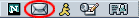
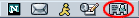
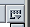
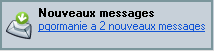

Ce document est fourni par Nestcape pour information uniquement. Il peut vous aider à prendre certaines mesures destinées à protéger la confidentialité et la sécurité de vos informations personnelles sur Internet. Ce document ne couvre cependant pas tous les aspects de la confidentialité et de la sécurité en ligne, et ne constitue pas une recommandation de la part de Netscape concernant ce qui constitue une protection adéquate de la confidentialité et de la sécurité sur Internet.
Utilisation du logiciel Messagerie & forums de Netscape
Netscape Messagerie & et forums permet désormais de gérer toutes vos communications Internet à partir d'un seul et même endroit. Vous pouvez configurer et gérer plusieurs comptes de messagerie professionnels et privés ainsi que des forums Internet, le tout à partir d'une seule et même fenêtre — la fenêtre Messagerie & forums. Vous pouvez en outre accéder aux comptes de messagerie tant Netscape Webmail qu'AOL à partir de la fenêtre Messagerie & forums.
Pour commencer à utiliser Netscape Mail & forums :
- Cliquez sur l'icône Messagerie & forums dans l'angle inférieur gauche d'une fenêtre Netscape Navigator.
|  |
| |
Icône Messagerie & forums |
Présentation de Netscape Messagerie & forums
Utilisation de l'assistant de configuration de compte de messagerie
Pour configurer un compte de messagerie ou de forum, ouvrez le menu Fenêtre et choisissez Messagerie & forums. Si vous n'avez pas encore configuré un compte, l'Assistant des comptes apparaît automatiquement, vous permettant de configurer un compte.
L'Assistant des comptes vous guide dans la création d'un nouveau compte. Si vous ignorez un paramètre, cliquez sur Annuler et consultez votre fournisseur d'accès à Internet (FAI) ou le service d'assistance.
Si un compte est déjà défini, l'Assistant des comptes n'apparaît pas automatiquement lorsque la fenêtre Mail s'ouvre. Après avoir ouvert la fenêtre Mail, ouvrez le menu Fichier et choisissez Nouveau, puis Compte. Pour plus de détails, voir Configuration d'autres comptes de messagerie et de forum.
Configuration d'un compte AOL ou Netscape WebMail
America Online (AOL) est un des FAI les plus populaires. Netscape Webmail est un service de messagerie gratuit facile d'emploi et accessible partout.
Si vous avez déjà un compte AOL ou Netscape Webmail, vous pouvez utiliser l'Assistant des comptes pour configurer Netscape Messagerie & forums afin d'accéder au courrier à partir de votre compte. Dans le menu Edition, choisissez Paramètres de compte de messagerie/forum, puis cliquez sur Ajouter un compte.
Si vous n'avez pas encore de compte Netscape Webmail, vous pouvez demander un compte gratuit en cliquant sur l'icône "WebMail Gratuit" dans le volet des dossiers.
Remarque : AOL Instant Messenger doit être installé pour que vous puissiez configurer et utiliser un compte AOL ou Netscape Webmail. AOL Instant Messenger est installé par défaut lorsque vous installez Netscape 7.0.
Configuration de comptes avec un FAI ou fournisseur de messagerie
Avant de configurer un compte de messagerie, vous devez avoir obtenu de votre FAI ou fournisseur de messagerie les informations suivantes :
- votre nom d'utilisateur
- votre adresse électronique
- le nom des serveurs de messagerie entrant et sortant
- le type de serveur entrant (IMAP ou POP)
Avant de configurer un compte de forum, vous devez avoir obtenu de votre FAI ou fournisseur de messagerie les informations suivantes :
- votre adresse électronique
- le nom du serveur de forums
- le nom du compte
Pour configurer un nouveau compte de messagerie ou de forum, procédez comme suit à partir de la fenêtre Mail :
- Ouvrez le menu Edition et sélectionnez Paramètres de compte de messagerie/forum. La boîte de dialogue Paramètres de compte de messagerie/forum s'affiche.
- Cliquez sur Ajouter un compte pour lancer l'Assistant des comptes.
Les informations demandées par l'Assistant des comptes dépendent du type de nouveau compte que vous spécifiez dans la première fenêtre. Les titres en gras ci-dessous correspondent aux fenêtres qui apparaîtront pendant la configuration d'un compte FAI ou de fournisseur de messagerie.
- Configuration d'un nouveau compte : Choisissez le type de compte à configurer, puis cliquez sur Suivant.
- Identité : Entrez le nom et l'adresse électronique appropriés pour ce compte, puis cliquez sur Suivant.
- Informations sur le serveur : Indiquez si vous voulez un compte POP ou un compte IMAP. Tous les FAI prennent en charge les deux options. Pour plus d'informations, voir Paramètres de compte de messagerie/forum - Paramètres du serveur.
Vous devez également indiquer le nom de votre serveur de messagerie entrant et de votre serveur sortant (SMTP). C'est le nom du serveur de messagerie qui envoie vos messages (également appelé "hôte SMTP"). Cliquez sur Suivant pour continuer.
Remarque : Vous ne devez spécifier qu'un seul serveur de messagerie sortant (SMTP), même si vous disposez de plusieurs comptes de messagerie. Le nom de votre hôte SMTP n'est pas nécessairement indiqué de manière explicite dans les informations de configuration de compte qui vous ont été fournies. Par exemple, l'hôte SMTP peut être identique à l'hôte POP3 ou IMAP. En cas de doute, contactez votre FAI ou administrateur système.
- Nom d'utilisateur : Entrez le nom d'utilisateur que vous a attribué votre FAI ou votre fournisseur de messagerie, puis cliquez sur Suivant.
- Nom du compte : Entrez le nom que vous souhaitez utiliser pour vous référer à ce compte, puis cliquez sur Suivant.
- Félicitations ! Vérifiez que les informations entrées sont correctes. Au besoin, vérifiez les informations entrées avec votre FAI ou administrateur système. Lorsque vous êtes sûr que ces informations sont correctes, cliquez sur Terminer pour configurer votre compte.
- Le nouveau compte apparaît dans la liste du côté gauche de la boîte de dialogue Paramètres de compte de messagerie/forum. Cliquez sur OK pour commencer à utiliser votre nouveau compte.
Vous êtes maintenant prêt à récupérer les messages de votre compte. Pour des instructions détaillées, consultez la rubrique Récupération des nouveaux messages.
[ Retour au début de la section ]
Configuration d'autres comptes de messagerie et de forum
La boîte de dialogue Paramètres du compte permet d'ajouter un nouveau compte ou de modifier des informations relatives à un compte existant, notamment :
- les paramètres de serveur de messagerie et de forums (par exemple, les préférences de téléchargement et de suppression de message)
- les paramètres de stockage des dossiers et copies de messages
- votre adresse de réponse, le nom de votre entreprise et votre signature
Pour ajouter un nouveau compte ou modifier les paramètres d'un compte existant, procédez comme suit à partir de la fenêtre Mail :
- Ouvrez le menu Edition et sélectionnez Paramètres de compte de messagerie/forum. La boîte de dialogue Paramètres de compte de messagerie/forum s'affiche. Elle permet d'effectuer les tâches suivantes :
- Ajouter un compte : Cliquez sur ce bouton pour configurer un nouveau compte de messagerie ou de forum. Veillez à entrer les informations de compte exactement tel qu'il vous est communiqué. Cliquez sur Suivant ou Précédent pour vous déplacer dans les écrans ou cliquez sur Annuler pour arrêter la création du compte.
- Définir par défaut : Sélectionnez un compte, puis cliquez sur ce bouton pour faire apparaître le compte sélectionné au début de la liste des comptes dans la fenêtre Mail. Les changements prendront effet au prochain démarrage de Messagerie & forums.
Le compte par défaut est celui auquel vous souhaitez vous connecter et (dans le cas de comptes IMAP uniquement) où vous souhaitez vérifier automatiquement la présence de nouveaux messages au démarrage Messagerie & forums. Pour les comptes POP, vous devez toujours cliquer sur le bouton Obtenir msg pour récupérer les nouveaux messages.
- Supprimer : Sélectionnez un compte, puis cliquez sur ce bouton pour le supprimer entièrement de votre fenêtre Mail.
- Serveur sortant (SMTP) : Cliquez sur ce bouton (au pied de la liste des comptes) pour modifier les informations relatives au serveur de messagerie sortant. Consultez la rubrique Paramètres de compte de messagerie/forum - Serveur sortant (SMTP) pour plus d'informations.
- Cliquez sur les en-têtes sous le nom d'un compte et modifiez les paramètres correspondants dans le panneau de droite.
- Cliquez sur OK pour enregistrer vos modifications.
[ Retour au début de la section ]
Modification des paramètres d'un compte
Pour afficher ou modifier des informations relatives à un compte de messagerie ou de forum existant, procédez comme suit à partir de la fenêtre Mail :
- Ouvrez le menu Edition et sélectionnez Paramètres de compte de messagerie/forum. La boîte de dialogue Paramètres de compte de messagerie/forum s'affiche.
- Cliquez sur le nom du compte à gauche de la boîte de dialogue Paramètres du compte. Des informations relatives au compte, telles que votre adresse électronique et le fichier de signature, s'affichent à droite de la boîte de dialogue.
- Cliquez sur un de ces éléments sous le nom d'un compte pour voir les paramètres correspondants :
- Paramètres du serveur : Les paramètres disponibles dépendent du type de serveur (serveur IMAP, POP ou de forum). Pour plus d'informations, voir Paramètres de compte de messagerie/forum - Paramètres du serveur.
Important : Pour changer le type du serveur (p. ex. de POP en IMAP), vous devez tout d'abord supprimer le compte existant. Vous devez ensuite quitter Netscape et le redémarrer. Vous pouvez ensuite rouvrir la boîte de dialogue Paramètres du compte de messagerie/forum et recréer un compte avec le nouveau type de serveur en cliquant sur Ajouter un compte.
- Copies & dossiers : Ces paramètres déterminent si vous voulez envoyer des messages automatiques (copies carbones invisibles) et où vous souhaitez enregistrer une copie de vos messages sortants, brouillons et modèles de messages. Pour plus d'informations, voir Paramètres de compte de messagerie/forum - Copies & dossiers.
- Adressage : Ces paramètres permettent de remplacer les paramètres de serveur d'annuaire globaux spécifiés pour tous les carnets d'adresses dans la boîte de dialogue Préférences. Pour plus d'informations, voir Paramètres de compte de messagerie/forum - Adressage.
- Hors ligne & espace disque (comptes IMAP et de forum uniquement) : Ces paramètres s'appliquent lorsque vous travaillez hors ligne (déconnecté de l'Internet) ou que vous devez économiser le temps de téléchargement et l'espace disque. Pour plus d'informations, voir Paramètres de session hors ligne et d'espace disque (IMAP) ou Paramètres de session hors ligne et d'espace disque (forum).
- Espace disque (comptes POP uniquement) : Ce paramètre détermine la taille maximale des messages que vous êtes prêt à charger sur votre disque dur. Pour plus d'informations, voir Paramètres d'espace disque (POP).
- Sécurité : Ces paramètres déterminent les certificats utilisés pour signer numériquement et chiffrer les messages électroniques que vous envoyez. Les signatures numériques vous permettent de vous identifier de manière fiable vis-à-vis de vos correspondants dans les messages électroniques que vous envoyez. Le chiffrement contribue à garantir la confidentialité de vos messages pendant leur transit sur Internet. Pour plus d'informations, voir Paramètres de compte de messagerie/forum - Sécurité.
- Cliquez sur OK pour enregistrer vos modifications.
[ Retour au début de la section ]
Utilisation d'AOL Instant Messenger avec Netscape Messagerie & forums
Si vous utilisez AOL Instant Messenger, Netscape Messagerie & forums vous permet de correspondre rapidement avec des amis et collègues pendant que vous gérez votre courrier. Par exemple, vous pouvez ajouter rapidement des entrées de votre répertoire de contacts à votre carnet d'adresses et envoyer à des collègues en ligne des messages instantanés à partir de toute fenêtre de message.
Une fois connecté à AOL Instant Messenger, vous pouvez voir si les expéditeurs ou destinataires de messages entrants le sont également. Lorsque l'icône de présence IM  s'affiche à droite d'un nom dans l'enveloppe du message, cliquez sur le nom et sélectionnez Envoyer un message instantané dans la liste déroulante pour lancer une session de messagerie.
s'affiche à droite d'un nom dans l'enveloppe du message, cliquez sur le nom et sélectionnez Envoyer un message instantané dans la liste déroulante pour lancer une session de messagerie.
Remarque : Pour que vous puissiez voir l'icône de présence IM d'une personne, le pseudonyme de cette personne doit figurer dans un de vos carnets d'adresses.
Pour vous connecter à AOL Instant Messenger :
- Ouvrez le menu Fenêtre et sélectionnez Instant Messenger ou cliquez sur l'icône Instant Messenger dans la barre d'état.
- Entrez vos pseudonyme et mot de passe, puis cliquez sur l'icône de connexion.
| |
| |
Icône AOL Instant Messenger |
Pour plus d'informations sur l'utilisation d'AOL Instant Messenger, voir Présentation d'Instant Messenger.
[ Retour au début de la section ]
Lecture de messages
Recherche de nouveaux messages
Pour un compte IMAP, vous pouvez récupérer automatiquement les nouveaux messages et les afficher dans la boîte de réception en ouvrant Messagerie & forums et en sélectionnant la boîte de réception du compte IMAP.
Pour un compte POP, vous devez cliquer sélectionner la boîte de réception et cliquer sur Obtenir msg pour récupérer vos messages. Par défaut, les messages provenant de votre compte POP sont supprimés du serveur POP une fois que vous les avez récupérés. Vous pouvez changer vos paramètres de serveur POP pour enregistrer une copie des messages sur le serveur en plus de les télécharger sur votre ordinateur.
Vous pouvez également configurer Messagerie & forums pour récupérer les nouveaux messages au démarrage et vérifier leur arrivée à intervalles réguliers.
| |
| |
Icône Messagerie & forums |
L'icône Mail et forums de la barre d'état affiche une flèche verte pour vous avertir de l'arrivée de nouveaux messages.
 |
| |
Notification de courrier |
Pour configurer un compte de messagerie pour vérifier automatiquement l'arrivée de nouveaux messages, à partir de la fenêtre Mail :
- Ouvrez le menu Edition et sélectionnez Paramètres de compte de messagerie/forum. La boîte de dialogue Paramètres de compte de messagerie/forum s'affiche.
- Si vous avez plusieurs comptes, sélectionnez-en un et cliquez sur la catégorie Paramètres du serveur correspondante.
- Sélectionnez une ou les deux options suivantes dans la section Paramètres du serveur :
- Rechercher les nouveaux messages au démarrage : Sélectionnez cette case à cocher si vous souhaitez vérifier automatiquement l'arrivée de nouveaux messages sur ce compte chaque fois que vous lancez Messagerie & forums. Pour les comptes POP, Messagerie & forums vérifie l'arrivée de nouveaux messages mais ne les télécharge pas à moins que vous cliquiez sur Obtenir msg ou que vous sélectionniez "Télécharger automatiquement tous les nouveaux messages".
- Vérifier les nouveaux messages toutes les ___ minutes : Sélectionnez cette case à cocher si vous souhaitez spécifier le nombre de minutes entre les vérifications de courrier. Vous pouvez également vérifier l'arrivée de nouveaux messages à tout moment en cliquant sur Obtenir msg dans la fenêtre Mail.
- Cliquez sur OK. Les paramètres prendront effet au démarrage suivant de Netscape Messagerie & forums.
Pour configurer Netscape Messagerie & forums afin qu'il émette un son ou affiche une alerte lorsque de nouveaux messages vous parviennent, voir Préférences de messagerie et forums – Messagerie & forums.
Vous pouvez toujours récupérer les messages manuellement à tout moment. Pour récupérer les nouveaux messages du compte ou du forum sélectionné, procédez comme suit :
- Cliquez sur Obtenir msg dans la barre d'outils de messagerie.
- Ouvrez le menu Fichier (dans la fenêtre Mail) et sélectionnez Retirer les nouveaux messages.
Pour récupérer les nouveaux messages pour tous vos comptes, à partir de la fenêtre Mail :
- Cliquez sur le triangle du bouton Obtenir msg dans la barre d'outils de messagerie.
- Sélectionnez Retirer tous les nouveaux messages. Netscape Messagerie & forums récupère les nouveaux messages pour tous vos comptes de messagerie.
Si vous n'êtes actuellement connecté à aucun de vos comptes de messagerie, Messagerie & forums vous invite à entrer vos nom d'utilisateur et mot de passe avant de récupérer les nouveaux messages. Si vous les avez déjà enregistrés à l'aide du Gestionnaire de mots de passe, Messagerie & forums ne vous invite pas à entrer ces informations.
Remarque : Vous pouvez aussi ouvrir le menu Fichier (dans la fenêtre Mail) et sélectionner "Retirer les nouveaux messages pour".
Pour récupérer les nouveaux messages pour un compte de messagerie spécifique, ouvrez la fenêtre Mail :
- Cliquez sur le triangle du bouton Obtenir msg dans la barre d'outils de messagerie.
- Sélectionnez le compte de messagerie pour lequel récupérer le courrier.
Remarque : Messagerie & forums vous invite à introduire votre mot de passe la première fois que vous récupérez des messages pour un compte. Vous pouvez à ce moment-là demander à Messagerie & forums de mémoriser votre mot de passe dans le Gestionnaire de mots de passe.
Le Gestionnaire de mots de passe peut enregistrer tous vos noms d'utilisateur et vos mots de passe sur votre ordinateur et les introduire automatiquement à votre place. Pour plus d'informations, voir Utilisation du Gestionnaire de mots de passe.
[ Retour au début de la section ]
Sélection de l'affichage de la fenêtre Mail
Vous pouvez personnaliser la présentation de la fenêtre Mail (la fenêtre qui s'affiche lorsque vous sélectionnez Messagerie & forums dans le menu Fenêtre) :
- Ouvrez le menu Afficher et choisissez Afficher/Masquer pour masquer ou afficher la barre d'outils de messagerie, la barre de recherche ou la barre d'état.
- Ouvrez le menu Afficher, choisissez Afficher/Masquer et choisissez l'option Ma barre latérale pour la désélectionner (la masquer).
- Agrandissez et réduisez un volet pour alterner entre un affichage à trois ou deux volets. Choisissez un affichage par défaut dans la section Messagerie et forums de la fenêtre Préférences. Si vous modifiez l'affichage par défaut, vous devez quitter Messagerie & forums et relancer Netscape pour que les changements entrent en vigueur.
[ Retour au début de la section ]
Tri des messages
Pour trier les messages par catégories telles que l'objet, l'expéditeur, la date ou la priorité, ouvrez la fenêtre Mail :
- Cliquez sur le titre de colonne approprié dans la fenêtre de liste des messages. Ou ouvrez le menu Afficher, sélectionnez Trier par et choisissez la colonne à trier.
Pour reclasser les en-têtes de colonne, à partir de la fenêtre Mail :
- Cliquez sur un titre de colonne et faites-le glisser vers la gauche ou vers la droite pour repositionner la colonne.
Pour grouper des messages par fil de discussion (sujet), afin que chaque message soit affiché avec toutes ses réponses :
- Cliquez sur le bouton Fil à gauche des titres de colonne Objet, Expéditeur et Date.
 |
| |
Bouton Fil |
Astuce : Pour vous aider à identifier les messages non lus dans un fil de discussion réduit dont vous avez lu le message parent, Netscape Messagerie & forums souligne ce dernier.
[ Retour au début de la section ]
Enregistrement et impression de messages
Pour enregistrer un message sous la forme de texte brut ou de fichier HTML ou Outlook Express :
- Dans la fenêtre Mail, sélectionnez le message.
- Ouvrez le menu Fichier et choisissez Enregistrer sous, puis Fichier.
- Indiquez le type de fichier à enregistrer (HTML, Texte, ou fichier de messagerie). Choisissez Fichier de messagerie si vous souhaitez enregistrer le message de manière à pouvoir l'ouvrir dans Microsoft Outlook ou Outlook Express.
- Changez l'extension du fichier en .html, .txt ou .eml, selon le type de fichier choisi à l'étape 3.
- Entrez la destination du fichier et cliquez sur Enregistrer.
Pour imprimer un message sélectionné :
[ Retour au début de la section ]
Contrôle des images, scripts et plugins
Par défaut, vous pouvez voir les images distantes dans les messages électroniques que vous recevez. Pour éviter le téléchargement des images intégrées dans les pages Web jointes à des messages :
- Ouvrez le menu Edition et choisissez Préférences.
- Dans la catégorie Confidentialité et sécurité, cliquez sur Images. Si aucune sous-catégorie n'est visible, double-cliquez sur Confidentialité et sécurité pour développer la liste.
- Cochez "Ne chargez pas d'images distantes dans les messages électroniques & et de forums".
- Cliquez sur OK pour appliquer cette modification.
Par défaut, JavaScript n'est pas activé et les plugins sont activés pour les messages que vous recevez. Pour changer ces paramètres :
- Ouvrez le menu Edition et choisissez Préférences.
- Dans la catégorie Avancé, cliquez sur Scripts et plugins. Si aucune sous-catégorie n'est visible, double-cliquez sur la catégorie Avancé pour développer la liste.
- Sous "Activer JavaScript pour", cochez "Messagerie & forums" de manière à activer JavaScript pour les pages Web affichées dans des messages électroniques.
- Sous "Activer les plugins pour", désélectionnez "Messagerie & forums" pour désactiver les plugins.
- Cliquez sur OK pour appliquer cette modification.
[ Retour au début de la section ]
Envoi de messages
Composition de messages
Vous pouvez adresser, rédiger, envoyer un nouveau message ou y répondre comme suit :
- Dans n'importe quelle fenêtre Netscape, ouvrez le menu Fichier et choisissez Nouveau, puis Message.
- Cliquez sur Composer dans la barre d'outils de messagerie.
- Alors qu'un message est affiché, cliquez sur Répondre, Transférer ou Répondre à tous dans la barre d'outils de messagerie.
- Dans la fenêtre Carnet d'adresses, sélectionnez une adresse et cliquez sur Composer dans le Carnet d'adresses.
Astuce : Utilisez la boîte de dialogue Paramètres de compte de messagerie/forum pour spécifier l'éditeur de texte HTML à utiliser pour composer les messages envoyés à partir de ce compte. Vous pouvez spécifier un éditeur différent pour chacun de vos comptes. Sélectionnez le compte et cochez "Composer les messages en format HTML" pour utiliser l'éditeur de texte HTML pour tous les messages. Voir Modification des paramètres d'un compte pour plus d'informations.
La composition de messages au format HTML permet d'utiliser différents styles de texte (gras, italique), polices et couleurs de texte, des tableaux, des listes numérotées ou à puces et des images dans vos messages. Cependant, certains destinataires ne pourront lire que les messages en texte brut. Pour utiliser occasionnellement l'éditeur de texte brut, vous pouvez maintenir la touche Maj enfoncée tout en cliquant sur le bouton Composer ou Répondre.
[ Retour au début de la section ]
Utilisation de la fenêtre de composition de message
Utilisez la fenêtre de composition pour adresser, composer et envoyer des messages. Spécifiez d'abord si vous souhaitez composer des messages en texte brut ou en HTML dans la section Paramètres du compte de la fenêtre Préférences (ouvrez le menu Edition et choisissez Paramètres de compte de messagerie/forum).
Pour afficher la fenêtre de composition, cliquez sur le bouton Composer dans la barre d'outils de messagerie.
La fenêtre Composer contient les éléments suivants :
Si vous avez choisi de composer des messages à l'aide de l'éditeur HTML, une autre barre d'outils s'affiche avec les mêmes boutons de formatage de texte que Netscape Composer.
Pour de l'aide sur l'utilisation de l'éditeur HTML, voir Formatage de vos pages Web.
[ Retour au début de la section ]
Adressage d'un message
Pour adresser un message électronique :
- Entrez le nom du destinataire dans la zone d'adressage.
Si vous avez activé le remplissage automatique de l'adresse (il l'est par défaut), il suffit de taper les premières lettres du nom du destinataire et d'attendre que Netscape Messagerie & forums complète l'adresse. Vous pouvez également taper une partie du nom et appuyer immédiatement sur Entrée pour que Netscape Messagerie & forums essaie de compléter l'adresse.
- Si plusieurs adresses sont trouvées, sélectionnez-en une et appuyez sur Entrée.
Remarque : Utilisez des virgules pour séparer plusieurs adresses sur la même ligne. N'en utilisez pas pour séparer les noms ou prénoms. Voici un exemple d'entrées multiples :
user1@netscape.net,user2@netscape.net
- Pour que ce message soit envoyé à partir d'un compte différent, cliquez sur "De" pour sélectionner celui de votre choix. Pour plus d'informations, voir Modification du compte d'origine d'un message.
- Au besoin, cliquez sur "A" pour sélectionner un autre type de destinataire :
-
- A : Pour les principaux destinataires du message.
- Copies à : Pour les destinataires secondaires (copie carbone).
- Copies cachées : Pour les destinataires secondaires invisibles aux autres destinataires, y compris ceux de la liste Cc (copie carbone invisible).
- Réponse : Pour les destinataires d'une réponse dont l'adresse électronique est différente de l'adresse d'origine du message.
- Forum : Pour l'envoi d'un message à un groupe de discussion.
- Suivi : Pour rediriger un message afin que les réponses correspondantes parviennent à un autre groupe de discussion que le groupe original.
Astuce : Vous pouvez rapidement adresser un message en cliquant sur l'adresse électronique contenue dans un message que vous lisez et en sélectionnant Composer le message à dans le menu contextuel.
Modification du compte d'origine d'un message
Si vous avez plusieurs comptes de messagerie, celui affiché dans la zone De est basé sur le compte (ou serveur) sélectionné lorsque vous avez choisi de créer un message. Toutefois, Netscape Messagerie & forums permet également de modifier le compte d'origine d'un message pendant sa composition. Cliquez sur la zone De pour afficher la liste des comptes et sélectionner le compte de votre choix. Une copie du message est enregistrée dans le dossier Sent associé au compte d'origine.
A propos du remplissage automatique de l'adresse
Le remplissage automatique de l'adresse permet d'adresser aisément un courrier à partir de la fenêtre de composition sans devoir rechercher des noms ni les taper en entier. Messagerie & forums vérifie automatiquement vos carnets d'adresses ainsi qu'un serveur d'annuaire LDAP (le cas échéant) et complète le nom s'il trouve une correspondance unique. Il évite également les erreurs en affichant tous les choix possibles avec des informations supplémentaires s'il trouve plusieurs correspondances. Le remplissage automatique d'adresses est activé par défaut.
Si vous ne souhaitez pas utiliser une adresse fournie par Messagerie & forums , il suffit d'appuyer sur la touche Retour arrière ou Suppr pour effacer des caractères et entrer une autre adresse.
Pour désactiver le remplissage automatique de l'adresse :
- Ouvrez le menu Edition et choisissez Préférences.
- Dans la catégorie Messagerie et forums, cliquez sur Adressage. Si aucune sous-catégorie n'est visible, double-cliquez sur Messagerie & forums pour développer la liste.
- Dans la section Remplissage automatique de l'adresse, désélectionnez "Carnets d'adresses locaux" et "Serveur de répertoire".
- Cliquez sur OK.
[ Retour au début de la section ]
Sélection des options d'envoi de message
Lorsque vous composez un message, vous pouvez sélectionner les options d'envoi de message supplémentaires suivantes dans le menu Options :
- Sélectionner des adresses : Cette option permet de sélectionner l'adresse électronique du destinataire dans vos carnets d'adresses ou dans un annuaire distant. Pour chercher une adresse dans un carnet d'adresses ou un répertoire, entrez les premières lettres du prénom ou du nom du destinataire pour commencer la recherche. Sélectionnez une adresse et cliquez sur A :, Copies à : ou Copies cachées : pour adresser le message.
- Orthographe :Vérifie l'orthographe du texte du message avant son envoi. Vous pouvez également cliquer sur le bouton Orthographe.
- Reboucler :Si vous composez un message à l'aide de l'éditeur de texte brut, vous pouvez utiliser cette commande pour adapter la longueur des lignes de texte à la largeur de la fenêtre de composition. Cette commande limite les lignes au nombre de caractères spécifié dans les préférences de Composition. Elle est essentiellement utile lorsque vous répondez à un message contenant de longues lignes en le citant.
Vous pouvez utiliser la commande Paramètres de compte de messagerie/forum dans le menu Edition pour spécifier l'utilisation de l'éditeur de texte brut pour la composition de messages. Dans la boîte de dialogue Paramètres du compte, sélectionnez le compte et désélectionnez "Composer les messages en format HTML" pour utiliser l'éditeur de texte brut pour tous les messages. Pour utiliser occasionnellement l'éditeur de texte brut, vous pouvez maintenir la touche Maj enfoncée tout en cliquant sur le bouton Composer ou Répondre.
- Accusés de réception : Choisissez cette option pour demander un message de confirmation lorsque le destinataire affiche (ouvre) votre message. Soyez conscient que le destinataire peut choisir de ne pas vous envoyer un accusé de réception. Cette option permet d'activer ou de désactiver les demandes d'accusé de réception message par message. Pour demander automatiquement des accusés de réception pour tous les messages que vous envoyez, utilisez les préférences d'accusé de réception. Pour plus d'informations, voir Préférences de messagerie et forums - Accusés de réception.
- Format :Envoie le message en texte brut ou HTML (formaté) ou les deux. Si vous sélectionnez "Détection auto", Messagerie & forums vous demande le format à utiliser si la capacité du programme de messagerie du destinataire à afficher un message HTML est inconnue. Le format sélectionné ici remplace le format d'envoi spécifié à l'aide de la commande Préférences du menu Edition.
- Priorité : Indiquez si la priorité du message est la plus faible, faible, normale, élevée ou la plus élevée.
- Envoyer une copie à :Sélectionnez cette option pour enregistrer une copie supplémentaire du message envoyé dans un dossier autre que le dossier Sent par défaut. Sélectionnez ensuite le dossier désiré.
- Sécurité : Choisissez cette option pour changer les options de sécurité par défaut de ce message.
[ Retour au début de la section ]
Réponse à un message
Pour répondre à un message électronique :
- Sélectionnez le message.
- Cliquez sur Répondre pour ne répondre qu'à l'expéditeur.
- Cliquez sur Répondre à tous pour répondre à tous les destinataires du message.
Pour inclure le message d'origine chaque fois que vous répondez à un message et spécifier la façon de placer le message d'origine dans la réponse :
- Ouvrez le menu Edition et choisissez Préférences.
- Dans la catégorie Messagerie & forums, cliquez sur Composition. Si aucune sous-catégorie n'est visible, double-cliquez sur Messagerie & forums pour développer la liste.
- Sélectionnez "Inclure automatiquement le message d'origine en répondant à l'expéditeur".
- Spécifiez où placer la réponse dans le message. L'option par défaut est "commencer la réponse au-dessus du texte inséré".
- Cliquez sur OK.
[ Retour au début de la section ]
Transfert d'un message
Lorsque vous transférez un message, vous pouvez spécifier où placer le nouveau texte par rapport au texte original : inséré (dans le corps du message, option par défaut) ou en tant que pièce jointe.
Pour transférer un message :
- Sélectionnez le message et cliquez sur Transférer.
- Entrez le nom ou l'adresse électronique du destinataire.
- Cliquez sur Envoyer.
Pour définir les paramètres par défaut de transfert des messages :
- Ouvrez le menu Edition et choisissez Préférences.
- Dans la catégorie Messagerie & forums, cliquez sur Composition. Si aucune sous-catégorie n'est visible, double-cliquez sur Messagerie & forums pour développer la liste.
- Pour transférer des messages, choisissez Incorporé (dans le corps du message) ou En tant que fichier joint.
- Cliquez sur OK.
Astuce : Pour remplacer le mode de transfert par défaut d'un message, sélectionnez le message, ouvrez le menu Message et choisissez Transférer en tant que, puis choisissez Incorporé ou En tant que fichier joint.
[ Retour au début de la section ]
Confirmation de l'ouverture de votre message
Vous pouvez utiliser des accusés de réception pour être averti quand un destinataire a affiché (ouvert) votre message. Pour cela, le destinataire doit utiliser un programme de messagerie conforme à la norme MDN (Message Disposition Notification). Soyez conscient que le destinataire peut choisir de ne pas vous envoyer un accusé de réception, même si vous en avez demandé un. Les messages que vous envoyez à un forum ne peuvent pas inclure une demande d'accusé de réception, car les serveurs de forums ne prennent pas en charge cette fonction.
Pour demander des accusés de réception pour tous les messages que vous envoyez, vous pouvez activer les préférences globales d'accusé de réception. Utilisez également les préférences d'accusé de réception pour spécifier comment gérer les demandes d'accusé de réception que vous recevez. Vous pouvez remplacer ces préférences globales pour chaque compte.
Pour demander un accusé de réception message par message :
- Dans une fenêtre de composition de message, ouvrez le menu Options et choisissez Accusé de réception.
Pour demander automatiquement un accusé de réception lors de l'envoi de messages à partir de chacun de vos comptes de messagerie :
- Ouvrez le menu Edition et choisissez Préférences.
- Dans la catégorie Messagerie & forums, cliquez sur Accusés de réception. Si aucune sous-catégorie n'est visible, double-cliquez sur Messagerie & forums pour développer la liste.
- Sélectionnez "Lors de l'envoi de messages, toujours demander un accusé de réception".
- Cliquez sur OK.
Pour plus d'informations sur le réglage des préférences d'accusé de réception, voir Préférences de messagerie et forums - Accusés de réception.
[ Retour au début de la section ]
Enregistrement et modification d'un brouillon de message
Pour enregistrer un message comme brouillon à compléter ultérieurement :
Pour modifier ou envoyer un brouillon, à partir de la fenêtre Mail :
- Cliquez sur le dossier Drafts du compte où vous avez créé le brouillon du message.
- Sélectionnez le message à modifier.
- Dans l'angle supérieur droit du message, cliquez sur Modifier brouillon.
- Modifiez le message au besoin.
- Cliquez sur Envoyer pour l'envoyer ou sur Enregistrer pour l'enregistrer et l'achever ultérieurement.
-
Remarque : Une fois envoyé, le message est retiré du dossier Drafts.
Astuce : Vous pouvez également double-cliquer sur le message pour l'ouvrir pour modification. Cela est particulièrement utile si le volet de message est fermé.
Pour supprimer un ou plusieurs brouillons dont vous n'avez plus besoin, à partir de la fenêtre Mail :
- Cliquez sur le dossier Drafts du compte où vous avez créé le brouillon du message.
- Sélectionnez les brouillons à supprimer.
- Cliquez sur Supprimer dans la barre d'outils de messagerie.
[ Retour au début de la section ]
Création et utilisation de modèles
Les modèles sont utiles pour définir le format par défaut des messages que vous envoyez régulièrement, tels que des rapports d'état hebdomadaires. Vous pouvez enregistrer un message comme modèle à partir de n'importe quelle fenêtre dans laquelle il est affiché, notamment d'une fenêtre de composition de message.
Pour enregistrer un message comme modèle :
- Dans la fenêtre Mail, cliquez sur Composer pour créer un nouveau message, puis définissez la police, la taille de texte, la couleur de texte, la couleur de fond et tout autre réglage par défaut souhaité.
Ou bien, ouvrez un message existant possédant le formatage voulu.
- Alors que le message est affiché, ouvrez le menu Fichier, choisissez Enregistrer sous, puis Modèle. Le message est enregistré comme modèle dans le dossier Templates du compte de messagerie en cours.
Pour composer un message à l'aide d'un modèle :
- Dans la fenêtre Mail, cliquez sur le dossier Templates du compte où vous avez créé le modèle de message.
- Double-cliquez sur le modèle pour l'ouvrir.
- Modifiez le message, puis enregistrez-le (pour le placer dans le dossier Brouillons) ou envoyez-le.
-
Remarque : L'envoi du message ne supprime pas le modèle du dossier Templates. Le modèle est conservé pour un usage futur.
Pour supprimer un ou plusieurs modèles dont vous n'avez plus besoin, à partir de la fenêtre Mail :
- Cliquez sur le dossier Templates du compte où vous avez créé les modèles.
- Sélectionnez les modèles à supprimer.
- Cliquez sur Supprimer dans la barre d'outils de messagerie.
[ Retour au début de la section ]
Création de messages en HTML
Utilisation du langage HTML dans vos messages
Les messages HTML peuvent comprendre du texte formaté, des liens, des images et des tableaux, tout comme une page Web. Toutefois, certains destinataires peuvent être dans l'impossibilité de recevoir des messages HTML. Netscape Messagerie & forums permet de composer des messages à l'aide de l'éditeur de formatage HTML (texte riche) ou de texte brut pour chacun de vos comptes de messagerie. En outre, vous pouvez définir si vos destinataires doivent recevoir des messages HTML ou en texte brut par défaut et comment Netscape Messagerie & forums doit traiter les messages lorsque la capacité des destinataires à recevoir des messages HTML formatés est inconnue.
Pour spécifier l'utilisation de l'éditeur HTML par défaut pour la composition de messages, ouvrez la fenêtre Mail :
- Ouvrez le menu Edition et sélectionnez Paramètres de compte de messagerie/forum. La boîte de dialogue Paramètres de compte de messagerie/forum s'affiche.
- Sélectionnez le compte de messagerie ou de forum à utiliser.
- Sélectionnez "Composer les messages en format HTML". La barre d'outils de formatage s'affiche dans la fenêtre de composition. Désélectionnez cette case pour utiliser l'éditeur de texte brut pour ce compte.
[ Retour au début de la section ]
Modification ou insertion de code HTML
Si vous êtes familiarisé avec le code source HTML, vous pouvez modifier ou insérer des étiquettes HTML, des attributs de style et des codes JavaScript dans votre message électronique. Dans le cas contraire, il est préférable de ne pas les modifier. Pour travailler avec du code HTML, utilisez l'une des deux méthodes suivantes :
- Placez le curseur là où vous souhaitez insérer le code HTML, ouvrez le menu Insérer et choisissez HTML. Dans la boîte de dialogue Insérer HTML, entrez des étiquettes HTML et du texte, puis cliquez sur Insérer pour insérer vos changements.
- Sélectionnez la source HTML à modifier, puis ouvrez le menu Insérer et choisissez HTML. Dans la boîte de dialogue Insérer HTML, modifiez des étiquettes HTML et du texte, puis cliquez sur Insérer pour insérer vos changements.
- Sélectionnez un élément tel qu'un tableau, un marqueur nommé, une image, un lien ou une ligne horizontale. Double-cliquez sur l'élément pour ouvrir la boîte de dialogue Propriétés correspondante. Cliquez sur Edition avancée pour ouvrir l'Editeur de propriétés avancées. Vous pouvez utiliser l'Editeur de propriétés avancées pour ajouter des attributs HTML et des codes JavaScript à des objets.
Pour plus d'informations sur la modification du code source HTML, voir Utilisation de l'Editeur de propriétés avancées.
[ Retour au début de la section ]
Sélection des options d'envoi de messages en HTML
Par défaut, Messagerie & forums demande confirmation avant d'envoyer des messages HTML lorsque la capacité du programme de messagerie du destinataire à afficher le texte formaté en HTML est inconnue.
Pour choisir des options de format d'envoi pour les messages électroniques, à partir de la fenêtre Mail :
- Ouvrez le menu Edition et choisissez Préférences.
- Dans la catégorie Messagerie & forums , cliquez sur Format d'envoi. Si aucune sous-catégorie n'est visible, double-cliquez sur Messagerie & forums pour développer la liste.
Remarque : Cette préférence ne s'applique qu'au courrier électronique, pas aux messages de forums.
- Sélectionnez l'option désirée et cliquez sur OK.
Si vous vous rendez compte, pendant la composition d'un message, qu'un ou plusieurs destinataires ne sont peut-être pas à même de recevoir du courrier formaté HTML, vous pouvez aisément le convertir en un autre format en cliquant sur Envoyer :
- Dans la fenêtre de composition, ouvrez le menu Options et choisissez Format.
- Sélectionnez le format à utiliser pour l'envoi du message dans le sous-menu :
- Détection auto : Messagerie & forum choisit le format approprié pour le texte du message. S'il ne peut pas déterminer le format, il vous demande de choisir un format.
- Messages en texte brut : Le message ne peut pas afficher le formatage tel que le gras, mais tous les programmes de messagerie seront capables de l'afficher.
- Texte HTML uniquement : Certains programmes de messagerie peuvent éprouver de la difficulté à afficher un message formaté en HTML. Choisissez cette option uniquement si vous êtes sûr que le programme de messagerie du destinataire est capable d'afficher les messages formatés en HTML.
- Texte normal et HTML : Ce format utilise davantage d'espace disque, mais peut être le meilleur choix si vous n'êtes pas sûr si le programme du destinataire peut afficher les messages en HTML.
- Une fois le message composé, cliquez sur Envoyer.
[ Retour au début de la section ]
Spécification de destinataires pour les messages HTML
Vous pouvez gagner du temps en indiquant si les contacts de votre carnet d'adresses préfèrent recevoir des messages HTML ou en texte brut.
- Ouvrez le menu Fenêtre et choisissez Carnet d'adresses.
- Sélectionnez le carnet d'adresses à gauche et la carte du contact à droite.
- Cliquez sur Propriétés pour afficher la boîte de dialogue "Carte pour".
- Dans l'onglet Nom, utilisez la liste déroulante "Préfère recevoir les messages formatés en" pour sélectionner HTML si vous savez que ce contact peut lire les messages HTML (tels que ceux comprenant des liens, des images ou des tableaux).
S'il ne peut lire que les messages envoyés en texte normal (sans formatage), choisissez Texte normal. Si vous n'en êtes pas certain, choisissez Inconnu.
Si vous choisissez Inconnu, Netscape Messagerie & forums détermine le format d'envoi en fonction des paramètres Format d'envoi de Messagerie & forums dans la boîte de dialogue Préférences. Si Messagerie & forums ne peut toujours pas déterminer le format correct, il vous invite à en sélectionner un lors de l'envoi du message.
- Cliquez sur OK.
[ Retour au début de la section ]
Affichage de la source des messages HTML
Vous pouvez afficher rapidement le code HTML et autre qui génère un message HTML reçu :
- Dans la fenêtre de liste des messages, ouvrez le message.
- Ouvrez le menu Afficher et sélectionnez Source du message.
[ Retour au début de la section ]
Utilisation de la boîte de dialogue de question sur les messages HTML
La boîte de dialogue de question sur les messages HTML s'affiche lorsque vous essayez d'envoyer un message à quelqu'un dont le programme ne peut pas afficher les messages en HTML ou lorsque Netscape Messagerie & forums ne peut pas déterminer si votre destinataire peut afficher les messages de ce type. En cas de doute, envoyez le message à la fois en HTML et en texte brut.
[ Retour au début de la section ]
Utilisation de pièces jointes
Annexe d'un fichier ou d'une page Web
Pour joindre un fichier à un message sortant :
- Dans la fenêtre de composition, cliquez sur Joindre ou ouvrez le menu Fichier et sélectionnez Joindre un fichier. La boîte de dialogue "Entrer le fichier à joindre" s'affiche.
Astuce : Vous pouvez également cliquer dans la zone Documents joints pour joindre un fichier.
- Entrez le nom du fichier à joindre ou sélectionnez-en un sur le disque dur.
- Cliquez sur Ouvrir. Le nom du fichier s'affiche dans la zone Documents joints.
Astuce : Vous pouvez également glisser-déposer un ou plusieurs fichiers de votre bureau vers la zone Documents joints de la fenêtre de composition.
Pour joindre une page Web à un message sortant :
- Dans la fenêtre de composition, ouvrez le menu Fichier et sélectionnez Joindre une page Web.
- Dans la boîte de dialogue, entrez l'URL de la page et cliquez sur OK. L'URL de la page s'affiche dans la zone Documents joints.
Astuce : Lorsque vous affichez une page dans Navigator, vous pouvez envoyer la page à un correspondant en ouvrant le menu Fichier et en choisissant Envoyer la page.
[ Retour au début de la section ]
Affichage et ouverture de pièces jointes
Si vous recevez une pièce jointe d'un type de fichier affichable par Netscape (notamment fichiers image et HTML), elle s'affiche de façon incorporée (dans le corps du message). Pour d'autres types de fichier, Messagerie & forums permet d'ouvrir la pièce jointe à l'aide d'une autre application ou de l'enregistrer sur le disque dur.
Pour ouvrir la pièce jointe, assurez-vous d'avoir un programme permettant d'ouvrir les fichiers de ce type. Par exemple, pour ouvrir un fichier .DOC, veillez à disposer d'un programme pouvant ouvrir les fichiers .DOC.
Pour ouvrir une pièce jointe :
- Double-cliquez sur la pièce jointe désirée (si elles sont plusieurs).
- Dans la boîte de dialogue de téléchargement, précisez ce que vous souhaitez que Netscape fasse de la pièce jointe :
- Si Netscape détecte sur votre disque dur une application qui peut ouvrir la pièce jointe, vous pouvez l'ouvrir à l'aide de cette application. Cliquez sur "Choisir" pour utiliser une application différente pour ouvrir la pièce jointe.
- Si Netscape ne détecte sur votre disque dur aucune application permettant d'ouvrir la pièce jointe, vous pouvez l'enregistrer. Vous ne pourrez pas ouvrir la pièce jointe, mais vous pourrez l'enregistrer sur votre disque dur jusqu'à ce que vous ayez installé une application permettant de l'ouvrir.
- Cliquez sur "Avancé" pour ajouter un nouveau type de fichier à la liste des applications auxiliaires. Netscape utilise les applications auxiliaires pour déterminer comment les différents types de fichiers doivent être ouverts par d'autres applications à partir de Netscape. Pour plus d'informations, voir Gestion de différents types de fichiers.
- Cliquez sur OK.
Remarque : Si vous utilisez un serveur de messagerie IMAP pour l'affichage du courrier, toutes les pièces jointes restent sur le serveur.
[ Retour au début de la section ]
Enregistrement de pièces jointes
Pour enregistrer une pièce jointe :
- A droite de l'enveloppe du message, sous "Documents joints", sélectionnez la pièce jointe à enregistrer.
- Cliquez avec le bouton droit (Contrôle-cliquez sous Mac) sur la pièce jointe et sélectionnez Enregistrer sous dans le menu contextuel.
- Choisissez le nom de fichier et l'emplacement de la pièce jointe sur le disque dur et cliquez sur OK. Messagerie & forums télécharge la pièce jointe et l'enregistre à l'emplacement spécifié.
Astuce : Pour enregistrer toutes les pièces jointes, cliquez avec le bouton droit sur la première de la liste et sélectionnez Tout enregistrer. Vous pouvez alors spécifier l'emplacement où enregistrer toutes les pièces jointes.
[ Retour au début de la section ]
Suppression de messages
Suppression de messages POP ou IMAP
La suppression des messages dépend du type de serveur de messagerie : POP ou IMAP. Les messages POP supprimés sont automatiquement placés dans le dossier Trash. Les utilisateurs IMAP peuvent définir différentes options pour la suppression de messages.
Pour supprimer des messages du dossier Inbox ou d'autres dossiers, à partir de la fenêtre Mail :
- Dans la liste des messages, sélectionnez les messages et cliquez sur Supprimer. Par défaut, Messagerie & forums place les messages sélectionnés dans le dossier Trash.
- Pour supprimer définitivement les messages, ouvrez le menu Fichier et choisissez Vider la corbeille.
Pour supprimer des messages sans les ouvrir, à partir de la fenêtre Mail :
- Ouvrez le menu Afficher, choisissez Afficher/Masquer et désélectionnez Volet des messages.
Ou bien, cliquez sur la poignée du Volet des messages (la zone striée centrée sur le bas de la liste des messages) pour fermer le volet des messages.
- Dans la liste des messages, sélectionnez les messages et cliquez sur Supprimer.
Pour définir les préférences de suppression des messages IMAP :
- Ouvrez le menu Edition et sélectionnez Paramètres de compte de messagerie/forum. La boîte de dialogue Paramètres de compte de messagerie/forum s'affiche.
- Recherchez le compte IMAP désiré et cliquez sur la catégorie Paramètres du serveur pour ce compte.
- Sélectionnez les options de suppression de messages et cliquez sur OK.
[ Retour au début de la section ]
Déplacement de messages de et vers la corbeille
Si vous utilisez un serveur POP pour transmettre vos messages ou si vous configurez le serveur IMAP pour utiliser le dossier Trash, procédez comme suit pour supprimer des messages du dossier Inbox ou d'autres :
- Dans la liste des messages, sélectionnez les messages à supprimer.
- Cliquez sur Supprimer. Messagerie & forums place les messages dans le dossier Trash.
Pour récupérer des messages du dossier Trash :
- Cliquez sur le dossier Trash.
- Sélectionnez les messages à récupérer et faites-les glisser vers un autre dossier.
Pour supprimer définitivement des messages :
- Ouvrez le menu Fichier et choisissez Vider la corbeille.
[ Retour au début de la section ]
Utilisation des carnets d'adresses
A propos des carnets d'adresses
Les carnets d'adresses contiennent les adresses électroniques et informations de contact des personnes auxquelles vous envoyez fréquemment des messages, telles que vos collègues, amis et proches. Netscape Messagerie & forums fournit deux carnets d'adresses : le carnet d'adresses personnel et le carnet d'adresses collectées, et vous pouvez en créer d'autres. Vous pouvez également importer des carnets d'adresses d'autres programmes de messagerie et d'anciennes versions de Netscape. Le contenu de ces carnets est enregistré localement sur le disque dur.
Le carnet d'adresses peut également contenir des adresses électroniques d'un annuaire LDAP, situé sur un serveur d'annuaire LDAP. Le serveur d'annuaire enregistre les adresses électroniques de personnes non incluses dans vos carnets d'adresses locaux. Le protocole LDAP (Lightweight Directory Access Protocol) est une méthode standard d'accès à des services d'annuaire sur Internet ou en intranet (p. ex. carnets d'adresses au niveau de l'entreprise).
Carnet d'adresses personnel
Utilisez le Carnet d'adresses personnel pour ajouter des noms spécifiques de votre choix. Vous pouvez créer des listes de diffusion et modifier des adresses individuelles. Si vous possédez un compte Netscape WebMail ou AOL, vous pouvez synchroniser les entrées des carnets d'adresses correspondants avec celles du carnet d'adresses personnel.
Adresses collectées
Le carnet d'adresses Adresses collectées rassemble automatiquement les adresses de courrier électronique contenues dans les messages entrants et sortants. Pour les messages entrants, le carnet d'adresses collectées stocke l'adresse de l'expéditeur de chaque message dès son ouverture. Les adresses des messages sortants sont enregistrées dès que vous cliquez sur Envoyer. Vous pouvez sélectionner les adresses à collecter (uniquement celles des messages de courrier ou également des messages de discussion) en modifiant les préférences de collecte d'adresses électroniques.
Annuaire LDAP (le cas échéant)
Un annuaire LDAP (également appelé service de consultation d'adresses) stocke les adresses électroniques de destinataires ne figurant pas dans vos carnets d'adresses locaux. Les annuaires LDAP permettent d'accéder à de grandes bases de données d'adresses électroniques gérées de manière centrale, particulièrement utiles avec le remplissage automatique de l'adresse.
La collecte automatique d'adresses est activée par défaut. Pour modifier les paramètres de collecte automatique des adresses, à partir de la fenêtre Mail :
- Ouvrez le menu Edition et choisissez Préférences.
- Dans la catégorie Messagerie et forums, cliquez sur Adressage. Si aucune sous-catégorie n'est visible, double-cliquez sur Messagerie & forums pour développer la liste.
- Sous Collecte d'adresses électroniques, sélectionnez :
- L'utilisation de cette fonction pour les messages entrants ou sortants ou les deux.
- L'utilisation de cette fonction pour les messages de forums.
- La limitation de la taille du carnet d'adresses collectées. La taille par défaut est de 700 cartes. Si une nouvelle carte dépasse la limite, la carte la plus ancienne est supprimée et la nouvelle ajoutée, ce qui conserve un nombre total de cartes égal.
- Cliquez sur OK.
Ouverture de la fenêtre Carnet d'adresses
Pour ouvrir la fenêtre Carnet d'adresses :
- Ouvrez le menu Fenêtre et choisissez Carnet d'adresses, ou cliquez sur l'icône du Carnet d'adresses dans l'angle inférieur gauche de toute fenêtre Netscape.
-
|  |
| |
Icône Carnet d'adresses |
Modification de l'affichage de la fenêtre Carnet d'adresses
Pour personnaliser l'affichage de la fenêtre Carnet d'adresses et des cartes :
- Ouvrez le menu Fenêtre et choisissez Carnet d'adresses. La fenêtre Carnet d'adresses s'ouvre.
- Dans la fenêtre Carnet d'adresses, ouvrez le menu Afficher et choisissez l'une des options d'affichage suivantes :
-
- Choisissez Afficher/Masquer, puis sélectionnez l'élément à désélectionner (masquer) ou à cocher (afficher).
- Sélectionnez Afficher le nom comme et choisissez l'affichage des noms des cartes (Prénom/Nom, Nom/Prénom ou Nom complet).
- Choisissez Trier par, puis sélectionnez une option de tri.
[ Retour au début de la section ]
Ajout d'entrées aux carnets d'adresses
Vous pouvez ajouter des entrées aux carnets d'adresses de l'une des façons suivantes :
- Cliquez sur un nom dans le champ De ou dans un autre champ de destinataire (par exemple, A ou Cc) dans un message reçu et sélectionnez "Ajouter au carnet d'adresses" dans la liste déroulante.
- Dans la fenêtre Carnet d'adresses, cliquez sur Nouvelle carte pour créer une carte.
- Synchronisez les entrées avec le carnet d'adresses WebMail ou AOL (vous devez posséder un compte Netscape WebMail ou un pseudonyme AOL).
- Ouvrez un message pour ajouter automatiquement l'adresse de l'expéditeur à votre carnet d'adresses collectées (s'il est activé).
- Dans la fenêtre Carnet d'adresses, copiez des entrées vers un autre carnet d'adresses en sélectionnant les entrées et en les faisant glisser sur le nom du carnet d'adresses de destination.
[ Retour au début de la section ]
Création d'un carnet d'adresses
Netscape Messagerie & forums fournit un carnet d'adresses personnel par défaut, mais vous pouvez en créer d'autres.
Pour créer un carnet d'adresses :
- Cliquez sur l'icône du Carnet d'adresses dans l'angle inférieur gauche d'une fenêtre Netscape ou ouvrez le menu Fenêtre et choisissez Carnet d'adresses. La fenêtre Carnet d'adresses s'ouvre.
- Dans la fenêtre Carnet d'adresses, ouvrez le menu Fichier, choisissez Nouveau, puis Carnet d'adresses. La boîte de dialogue Nouveau carnet d'adresses s'affiche.
- Entrez le nom du carnet d'adresses et cliquez sur OK.
[ Retour au début de la section ]
Création d'une carte de carnet d'adresses
Les cartes de carnets d'adresses peuvent être utilisées pour stocker des noms, adresses postales, adresses électroniques, numéros de téléphone et informations telles que la préférence de réception de messages en texte brut ou HTML.
Pour créer une carte de carnet d'adresses :
- Cliquez sur l'icône Carnet d'adresses dans la barre d'état ou ouvrez le menu Fenêtre et choisissez Carnet d'adresses.
- Cliquez sur Nouvelle carte. Si vous avez plusieurs carnets d'adresses, sélectionnez celui auquel ajouter la carte.
- Chaque boîte de dialogue Nouvelle carte comprend quatre onglets :
-
Astuce : Pour ajouter rapidement des entrées au carnet d'adresses, cliquez sur des adresses électroniques dans les messages reçus et sélectionnez Ajouter au carnet d'adresses dans la liste déroulante. La boîte de dialogue Nouvelle carte s'affiche et permet d'entrer les informations.
Affichage ou modification des propriétés de carte
Pour afficher ou modifier les propriétés d'une carte :
- Sélectionnez la carte dans la liste d'entrées de la fenêtre Carnet d'adresses.
- Cliquez sur Propriétés.
[ Retour au début de la section ]
Création d'une liste de diffusion
Si vous envoyez régulièrement des messages à un groupe de destinataires, vous pouvez leur adresser rapidement un message à l'aide d'une liste de diffusion contenant les noms de votre choix.
Pour créer une liste de diffusion et l'ajouter au carnet d'adresses :
- Dans la fenêtre Carnet d'adresses, cliquez sur Nouvelle liste.
- Entrez les informations suivantes dans la boîte de dialogue Liste de diffusion :
- Cliquez sur la liste déroulante "Ajouter à :" pour choisir un carnet d'adresses dans lequel enregistrer la liste.
- Nom de la liste : Lorsque vous entrez le nom de la liste dans la zone "A" d'un message, tous ses membres le reçoivent.
- Pseudonyme : Alias (ou abréviation) du nom de la liste.
- Description : S'affiche après le nom de la liste dans la ligne d'adresse de la fenêtre de composition.
- Tapez des adresses électroniques pour les ajouter à la liste de diffusion.
- Cliquez sur OK.
Dans le côté gauche de la fenêtre Carnet d'adresses, la liste de diffusion apparaît sous le carnet d'adresses où vous l'avez ajoutée.
[ Retour au début de la section ]
Modification d'une liste de diffusion
Les listes de diffusion sont stockées dans le carnet d'adresses dans lequel elles ont été créées.
Pour supprimer un membre de la liste, ouvrez la fenêtre Mail :
- Ouvrez le menu Fenêtre et choisissez Carnet d'adresses.
- Développez le carnet d'adresses contenant votre liste de diffusion en cliquant sur le petit triangle à côté de son nom.
- Cliquez sur la liste de diffusion. Les membres s'affichent à droite du nom de la liste de diffusion.
- Cliquez sur l'entrée à supprimer.
- Cliquez sur le bouton Supprimer.
Pour ajouter des membres à une liste de diffusion :
- Ouvrez le menu Fenêtre et choisissez Carnet d'adresses.
- Développez le carnet d'adresses contenant votre liste de diffusion en cliquant sur le petit triangle à côté de son nom.
- Cliquez sur la liste de diffusion.
- Cliquez sur Propriétés.
- Ajoutez ou supprimez des entrées au besoin.
- Cliquez sur OK lorsque vous avez terminé.
[ Retour au début de la section ]
Recherche dans des carnets d'adresses et cotacts AIM
Netscape Messagerie & forums permet de rechercher rapidement un nom ou une adresse dans un carnet d'adresses ou un contacts AIM ou d'utiliser une combinaison de critères pour y effectuer une recherche plus spécifique.
Pour chercher rapidement un nom ou une adresse électronique dans un carnet d'adresses ou un contacts AIM, à partir de la fenêtre Carnet d'adresses :
- Dans la liste des carnets d'adresses, sélectionnez le carnet d'adresses ou le contacts AIM à parcourir.
- Dans le champ "Le nom ou l'adresse de messagerie contient", tapez le nom ou l'adresse électronique à rechercher. Vous pouvez taper une partie du nom ou de l'adresse électronique ou le texte exact à rechercher.
Dès que vous arrêtez de taper, Netscape Messagerie & Forums affiche les entrées dont le nom ou l'adresse électronique contient le texte recherché.
- Cliquez sur Supprimer pour effacer le texte de recherche et afficher toutes les entrées.
Recherche d'entrées spécifiques
Vous pouvez chercher des entrées spécifiques dans les carnets d'adresses ou les contacts AIM. Si la boîte de dialogue Recherche avancée dans le carnet d'adresses n'est pas encore affichée, à partir de la fenêtre Carnet d'adresses :
- Dans le menu Outils, choisissez Rechercher des adresses. La boîte de dialogue Recherche avancée dans le carnet d'adresses s'affiche.
- Face à "Rechercher dans", choisissez le carnet d'adresses ou contacts AIM où effectuer la recherche.
- Sélectionnez l'option de correspondance à utiliser par Messagerie & forums pour rechercher des entrées qui répondent à toutes ou au moins une des conditions (critères) choisies.
- Cliquez sur Davantage pour ajouter des critères et sur Moins pour en supprimer.
- Cliquez sur Rechercher pour commencer ou sur Supprimer pour effacer les entrées. Les résultats de la recherche apparaissent dans la partie inférieure de la boîte de dialogue.
- Pour trier les entrées dans un ordre différent, cliquez sur la colonne selon laquelle trier.
- Pour afficher la carte d'une entrée, sélectionnez l'entrée et cliquez sur Propriétés.
- Pour composer un message à adresser à plusieurs destinataires, sélectionnez une ou plusieurs entrées et cliquez sur Composer.
[ Retour au début de la section ]
Importation de carnets d'adresses
Si vous avez un carnet d'adresses Netscape 6 provenant d'un autre utilisateur ou ordinateur, ou si vous avez un carnet d'adresses d'une version précédente de Netscape Communicator ou d'un autre programme de messagerie, vous pouvez en importer les entrées dans la fenêtre Carnet d'adresses sous la forme d'un nouveau carnet d'adresses. N'oubliez pas que lorsque vous mettez à niveau un profil utilisateur à partir d'une version antérieure de Netscape, les carnets d'adresses correspondants sont automatiquement inclus. Vous ne devez donc pas les importer.
Vous pouvez importer des carnets d'adresses de Communicator, Netscape 6, Eudora, Outlook, Outlook Express, ou de fichiers texte (formats LDIF, délimité par des tabulations (.tab), séparé par des virgules (.csv) ou texte (.txt)). Lorsque vous importez un carnet d'adresses, Messagerie & forums en crée un nouveau avec les entrées importées.
Vous pouvez également importer des messages et des paramètres de Communicator, Eudora, Outlook et Outlook Express.
Pour importer un carnet d'adresses, à partir de la fenêtre Mail :
- Dans le menu Outils, choisissez Importer. L'Assistant d'importation de courrier s'affiche.
- Suivez les instructions pour importer des carnets d'adresses.
-
Astuce : Les carnets d'adresses Communicator (pab.na2) sont stockés dans le répertoire de profil utilisateur (par exemple, C:\Programme Files\Netscape\Utilisateurs, où \Utilisateurs contient les répertoires de profils utilisateurs).
[ Retour au début de la section ]
Exportation de carnets d'adresses
Vous pouvez exporter un carnet d'adresses Netscape pour l'importer ensuite dans un autre profil utilisateur, le déplacer vers un autre ordinateur ou l'utiliser avec un autre programme capable d'importer des carnets d'adresses. Vous pouvez exporter un carnet d'adresses dans l'un des formats de fichier suivants : Netscape (.ldif), délimité par des tabulations (.tab), séparé par des virgules (.csv) ou texte (.txt).
Pour exporter un carnet d'adresses, à partir de la fenêtre Carnet d'adresses :
- Sélectionnez le carnet d'adresses à exporter.
- Dans le menu Outils, choisissez Exporter.
- Dans la boîte de dialogue Exporter un carnet d'adresses, accédez à l'emplacement où vous souhaitez enregistrer le fichier de carnet d'adresses.
- Choisissez le format de fichier pour le carnet d'adresses exporté (.ldif, séparé par des virgules ou délimité par des tabulations).
- Entrez le nom du fichier de carnet d'adresses à créer. Pensez à inclure l'extension de fichier appropriée (.ldif, .csv, .tab ou .txt).
- Cliquez sur Enregistrer.
[ Retour au début de la section ]
Synchronisation des entrées avec le carnet d'adresses WebMail ou AOL
La synchronisation de carnets d'adresses permet de gagner du temps lorsque vous n'êtes pas à portée de votre ordinateur, car votre carnet d'adresses est toujours accessible sur le Web via votre compte Webmail ou AOL.
Vous pouvez synchroniser des carnets d'adresses dans votre compte Netscape Webmail ou AOL avec des entrées de votre Carnet d'adresses personnel Netscape. Si vous ajoutez, modifiez ou supprimez une entrée d'un carnet d'adresses, vous pouvez automatiquement mettre à jour l'autre carnet en conséquence.
Remarque : Pour synchroniser votre carnet d'adresses, vous devez déjà avoir un pseudonyme AOL ou Netscape. Si vous n'avez pas encore de pseudonyme, vous pouvez en obtenir un sur http://home.netscape.com.
Pour synchroniser les carnets d'adresses, ouvrez la fenêtre Carnet d'adresses :
- Dans la fenêtre Carnet d'adresses, cliquez sur le bouton Synchroniser de la barre d'outils ou sélectionnez Synchroniser le carnet d'adresses Netscape dans le menu Outils.
- Messagerie & forums vous invite à entrer le nom d'utilisateur (pseudonyme) et le mot de passe du compte à utiliser pour la synchronisation des carnets d'adresses.
Par exemple, pour synchroniser le carnet d'adresses personnel avec le carnet d'adresses Netscape WebMail, entrez vos nom d'utilisateur et mot de passe WebMail. Pour synchroniser le carnet d'adresses personnel avec le carnet d'adresses AOL, entrez vos nom d'utilisateur et mot de passe AOL.
- Cliquez sur OK pour entamer la synchronisation.
Vous pouvez continuer à synchroniser les carnets d'adresses pendant toute la session Mail (sans devoir vous reconnecter). Il suffit de cliquer sur Synchroniser ou de choisir Synchroniser le carnet d'adresses Netscape dans le menu Outils.
[ Retour au début de la section ]
Ajout et suppression d'annuaires LDAP
L'ajout d'un répertoire LDAP à votre carnet d'adresses vous permet de chercher dans ce répertoire des adresses électroniques et d'autres informations de contact. Vous pouvez également utiliser le répertoire pour le remplissage automatique de l'adresse lors de l'adressage de messages électroniques.
En général, l'ajout et la suppression de répertoires LDAP s'effectuent en respectant les instructions fournies par votre administrateur système Vérifiez auprès de ce dernier les informations dont vous aurez besoin pour ajouter un nouveau répertoire à votre carnet d'adresses
Pour ajouter un contacts AIM, à partir de la fenêtre Carnet d'adresses :
- Ouvrez le menu Fichier, choisissez Nouveau, puis Annuaire LDAP. La boîte de dialogue Propriétés du serveur d'annuaire s'affiche.
- Entrez les informations suivantes dans l'onglet Générales de la boîte de dialogue Propriétés du serveur d'annuaire :
- Nom : Entrez le nom du service d'annuaire (par exemple, InfoSpace Directory).
- Nom d'hôte : Entrez le nom du serveur hôte, tel que ldap.infospace.com.
- DN de base : Ce paramètre est utilisé pour définir le nom distinctif de base. Entrez des codes pour limiter la recherche à un pays ou à une organisation spécifique. Par exemple, c=JP limite la recherche uniquement au Japon. DN de base spécifie également l'organisation dans laquelle rechercher (par exemple, o=Netscape Communications Corporation, c=Etats-Unis).
- Numéro de port : Entrez le numéro de port du serveur LDAP. La valeur par défaut est 389.
- Lier le DN: Nom distinctif utilisé pour authentifier (se connecter) auprès du serveur LDAP. Si ce champ est vide, le serveur LDAP se lie de manière anonyme.
- Utiliser une connexion sûre (SSL) : Choisissez ce paramètre si votre serveur LDAP prend en charge les connexions sécurisées (chiffrées). En cas de doute, consultez votre administrateur système.
- Cliquez sur l'onglet Avancé pour configurer les paramètres du serveur d'annuaire LDAP.
- Entrez les informations suivantes :
- Ne pas renvoyer plus de _ résultats : Cette option permet de limiter le nombre de correspondances de remplissage automatique renvoyées par le serveur d'annuaire. Entrez le nombre maximum de correspondances d'adresses électroniques à afficher pour le remplissage automatique.
- Portée : Définit les limites de la recherche. Sélectionnez l'une des options suivantes :
- Un niveau : Récupère les entrées correspondantes en recherchant au niveau du DN de base et au niveau inférieur.
- Sous-arbre : Récupère les entrées correspondantes en recherchant au niveau du DN de base et dans tous les niveaux inférieurs. Cette recherche est la moins restrictive.
- Filtre de recherche : Entrez le filtre de recherche à appliquer aux résultats correspondants à la recherche.
- Cliquez sur OK pour quitter la boîte de dialogue Propriétés du serveur d'annuaire.
- Cliquez sur OK pour fermer la boîte de dialogue Serveurs d'annuaire LDAP.
- Cliquez sur OK pour fermer la boîte de dialogue Préférences.
Le répertoire ajouté apparaît dans la liste des carnets d'adresses de la fenêtre Carnet d'adresses.
Pour supprimer un répertoire :
- Ouvrez le menu Edition et choisissez Préférences. La boîte de dialogue Préférences s'affiche.
- Dans la catégorie Messagerie et forums, sélectionnez Adressage. Si aucune sous-catégorie n'est visible, double-cliquez sur Messagerie & forums pour développer la liste.
- Dans Remplissage automatique de l'adresse sur le côté droit de la boîte de dialogue, cliquez sur Modifier répertoires.
- Dans la boîte de dialogue Serveurs d'annuaire LDAP, sélectionnez l'annuaire à supprimer et cliquez sur Supprimer.
- Cliquez sur OK à deux reprises pour fermer la boîte de dialogue Préférences.
Pour des informations sur le téléchargement ou la synchronisation d'un contacts AIM en vue d'une utilisation hors ligne pour y effectuer des recherches ou l'utiliser pour la fonction de remplissage automatique des adresses pendant une session hors ligne, voir Téléchargement d'entrées de répertoire pour une utilisation hors ligne.
Paramètres de serveur d'annuaire
Pour afficher la boîte de dialogue Propriétés du serveur d'annuaire, procédez comme suit à partir de la fenêtre Mail :
- Ouvrez le menu Fenêtre et choisissez Carnet d'adresses.
- Dans la liste des carnets d'adresses, sélectionnez les contacts AIM.
- Cliquez sur Propriétés.
Onglet Générales
- Nom : Nom du service d'annuaire (par exemple, Annuaire InfoSpace).
- Nom d'hôte : Nom du serveur hôte, tel que ldap.infospace.com.
- DN de base : Nom distinctif de base. Les codes introduits ici limitent la recherche à un pays ou à une organisation spécifique. Par exemple, c=JP limite la recherche uniquement au Japon. DN de base spécifie également l'organisation dans laquelle rechercher (par exemple, o=Netscape Communications Corporation, c=Etats-Unis).
- Numéro de port : Entrez le numéro de port du serveur LDAP. La valeur par défaut est 389.
- Lier le DN: Nom distinctif utilisé pour authentifier (se connecter) auprès du serveur LDAP. Si ce champ est vide, le serveur LDAP se lie de manière anonyme.
- Utiliser une connexion sûre (SSL) : Choisissez ce paramètre si votre serveur LDAP prend en charge les connexions sécurisées (chiffrées). En cas de doute, consultez votre administrateur système.
Onglet Avancé
- Ne pas renvoyer plus de _ résultats : Cette option permet de limiter le nombre de correspondances de remplissage automatique renvoyées par le serveur d'annuaire. Spécifiez le nombre maximum de correspondances d'adresses électroniques à afficher pour le remplissage automatique.
- Portée : Définit les limites de la recherche :
-
- Un niveau : Récupère les entrées correspondantes en recherchant au niveau du DN de base et au niveau inférieur.
- Sous-arbre : Récupère les entrées correspondantes en recherchant au niveau du DN de base et dans tous les niveaux inférieurs. Cette recherche est la moins restrictive.
- Filtre de recherche : Spécifie le filtre de recherche à appliquer aux résultats correspondants à la recherche.
[ Retour au début de la section ]
Organisation des messages
Création d'un dossier
Pour créer un dossier de messages, ouvrez la fenêtre Mail :
- Ouvrez le menu Fichier, choisissez Nouveau, puis Dossier. La boîte de dialogue Nouveau dossier s'affiche.
- Entrez le nom du dossier.
- Cliquez sur la liste déroulante et choisissez un emplacement et cliquez sur OK. Le nouveau dossier apparaît dans la liste des dossiers de courrier.
[ Retour au début de la section ]
Changement de nom d'un dossier
Pour renommer un dossier existant, ouvrez la fenêtre Mail :
- Sélectionnez le dossier à renommer.
- Ouvrez le menu Fichier et choisissez Renommer un dossier. La boîte de dialogue Renommer le dossier s'affiche.
- Entrez le nouveau nom et cliquez sur OK.
Remarque : Si vous renommez un dossier utilisé pour stocker des messages filtrés, le filtre sera automatiquement mis à jour pour utiliser le dossier renommé.
[ Retour au début de la section ]
Déplacement ou copie d'un dossier
Vous pouvez copier un dossier et son contenu dans un autre compte de messagerie ou le déplacer dans le même compte.
Pour déplacer ou copier un dossier, ouvrez la fenêtre Mail :
- Sélectionnez le dossier à déplacer ou copier.
- Effectuez l'une des opérations suivantes :
- Pour déplacer le dossier dans un autre dossier du même compte, faites-le glisser sur le nom du dossier en question. Le dossier déplacé devient un sous-dossier.
- Pour copier le dossier dans un autre compte, faites-le glisser sur le nom de ce dernier.
- Pour copier le dossier dans un autre dossier d'un autre compte, faites-le glisser sur le nom de ce dossier. Le dossier copié devient un sous-dossier.
[ Retour au début de la section ]
Archivage de messages dans des dossiers
Vous pouvez déplacer des messages d'un dossier à un autre à l'aide des méthodes suivantes :
Pour copier un message d'un dossier à un autre :
- Sélectionnez le message et cliquez dessus avec le bouton droit pour sélectionner le menu contextuel.
- Sélectionnez "Copier vers" et sélectionnez le compte et le dossier de destination dans la liste déroulante.
Astuce : Ou bien, vous pouvez copier un message entre des dossiers en appuyant sur la touche Maj tout en faisant glisser le message de la liste des messages vers un autre dossier.
[ Retour au début de la section ]
Partage de dossiers avec d'autres utilisateurs (IMAP uniquement)
Les utilisateurs possédant des comptes de messagerie IMAP peuvent partager leurs dossiers de messages avec d'autres utilisateurs sur le même réseau. Le partage de dossiers permet à plusieurs utilisateurs de consulter et manipuler les mêmes messages, comme dans un forum. Pour que vous puissiez utiliser des dossiers partagés, votre serveur de messagerie IMAP doit prendre en charge la gestion des listes de contrôle d'accès (ACL). Vérifiez auprès de votre administrateur système ou service d'assistance si vous n'êtes pas sûr que votre serveur de messagerie IMAP prend en charge les dossiers partagés.
Pour partager un dossier de messagerie avec d'autres utilisateurs du réseau ou pour afficher les informations de partage d'un dossier, à partir de la fenêtre Mail :
- Dans un compte IMAP, sélectionnez un dossier que vous souhaitez partager ou dont vous souhaitez visualiser les privilèges de partage.
Les dossiers faisant partie des Dossiers locaux ou appartenant à un compte de messagerie POP ne peuvent pas être partagés.
- Ouvrez le menu Edition et choisissez Propriétés du dossier.
- Cliquez sur l'onglet Partage.
- Cliquez sur Privilèges. Vous serez peut-être invité à entrer votre nom d'utilisateur et votre mot de passe réseau.
Le bouton Privilèges est uniquement disponible si le serveur de messagerie IMAP permet de définir des privilèges de partage de dossiers. Si ce bouton n'est pas disponible, vous pouvez afficher les privilèges de partage du dossier mais ne pouvez pas les modifier.
- Suivez les instructions à l'écran pour ajouter des utilisateurs et définir leurs privilèges d'accès au dossier.
- Privilèges de lecture : Les utilisateurs peuvent lire les messages et en copier le contenu, mais ne peuvent pas modifier ni supprimer des messages, ni copier des messages dans le dossier. Ils peuvent marquer des messages comme lus ou non lus. Voir Marquage de messages pour des instructions sur le marquage des messages.
- Privilèges de lecture et écriture : Outre les privilèges de lecture, les utilisateurs ont le droit de modifier et supprimer des messages. Ils peuvent également copier ou déplacer des messages dans le dossier.
- Privilèges de gestion : Outre les privilèges de lecture et écriture, les utilisateurs ont le droit d'ajouter et supprimer des utilisateurs et de modifier leurs autorisations liées au dossier.
- Cliquez sur OK pour confirmer vos modifications.
- Cliquez sur OK pour fermer la boîte de dialogue Propriétés du dossier.
Dans la liste des dossiers de votre compte de messagerie, un dossier partagé présente une icône distinctive montrant qu'il est partagé.
Pour envoyer un message indiquant aux autres comment ils peuvent s'abonner à votre dossier partagé, à partir de la fenêtre Mail :
- Sélectionnez le dossier partagé.
- Cliquez avec le bouton droit pour afficher un menu contextuel et choisissez Copier l'emplacement du dossier.
- Cliquez sur Composer pour afficher une fenêtre de composition de message.
- Cliquez dans le corps du message, ouvrez le menu Edition et choisissez Coller.
- Adressez le message, tapez un objet et tapez le texte du message. Expliquez aux destinataires du message qu'ils peuvent s'abonner au dossier partagé en cliquant sur le lien que vous avez collé dans le message.
Seuls les destinataires situés sur le même réseau pourront s'abonner à votre dossier partagé.
- Cliquez sur Envoyer.
Abonnement à un dossier partagé
L'abonnement à un dossier partagé est semblable à l'abonnement à un forum. Pour vous abonner à un dossier partagé, à partir de la fenêtre Mail :
- Ouvrez le menu Fichier et choisissez S'abonner. La boîte de dialogue S'abonner s'affiche.
- Au besoin, cliquez sur la liste déroulante Compte pour sélectionner un autre compte IMAP.
- Sélectionnez le dossier auquel vous voulez vous abonner.
- Cliquez sur S'abonner ou dans la colonne S'abonner à côté du dossier. Une marque s'affiche à côté de chaque dossier auquel vous vous abonnez. Cliquez sur Annuler l'abonnement pour annuler une sélection.
- Cliquez sur OK. La liste des dossiers auxquels vous êtes abonné s'affiche dans la fenêtre Mail.
[ Retour au début de la section ]
Etiquetage de messages
Vous pouvez appliquer des étiquettes à des messages afin d'en faciliter l'organisation et la gestion des priorités. Vous pouvez appliquer une couleur et un texte d'étiquette standard, ou personnaliser les couleurs ou le texte de l'étiquette en fonction de vos besoins.
Une manière puissante d'utiliser les étiquettes consiste à configurer un filtre de messages qui applique automatiquement des étiquettes aux messages entrants provenant d'un expéditeur spécifique. Par exemple, vous pouvez configurer un filtre tel que les messages provenant de votre patron soient étiquetés "Important" et apparaissent en rouge. Pour plus d'informations, voir Création de filtres de messages.
Application d'une étiquette
Pour appliquer une étiquette à un message, à partir de la fenêtre Mail :
- Sélectionnez le message à étiqueter.
- Dans le menu Message, choisissez Etiquette.
- Choisissez l'étiquette à appliquer.
L'en-tête du message change pour prendre la couleur d'étiquette choisie. Pour voir le texte de l'étiquette, vous devez afficher la colonne Etiquette dans la fenêtre Mail.
Astuce : Pour étiqueter rapidement des messages ou supprimer rapidement une étiquette, sélectionnez un ou plusieurs messages et appuyez sur la touche 1, 2, 3, 4 ou 5 de votre clavier. Appuyez sur 0 pour supprimer une étiquette.
Pour afficher la colonne Etiquette, à partir de la fenêtre Mail :
- Cliquez sur l'icône Afficher/masquer des colonnes  et sélectionnez Etiquette dans la liste.
Remarque : Les étiquettes de message s'appliquent à un compte spécifique. Par exemple, si vous déplacez ou copiez un message étiqueté vers un autre compte de messagerie, l'étiquette n'est pas conservée. De même, si vous transférez un message étiqueté à un autre destinataire, l'étiquette n'est pas conservée. Pour les comptes de messagerie IMAP, si votre serveur IMAP prend en charge les mots clés définis par l'utilisateur, les étiquettes de message sont maintenues lorsque vous vous connectez à votre compte de messagerie à partir d'un autre site. Dans un compte de messagerie AOL, lorsqu'un message étiqueté est automatiquement déplacé du dossier Nouveau courrier vers le dossier Ancien courrier, l'étiquette est perdue.
[ Retour au début de la section ]
Personnalisation d'étiquettes
Vous pouvez personnaliser les couleurs ou le texte des étiquettes à votre gré.
Pour personnaliser des étiquettes, à partir de la fenêtre Mail :
- Ouvrez le menu Edition et choisissez Préférences. La boîte de dialogue Préférences s'affiche.
- Dans la catégorie Messagerie & forums, cliquez sur Etiquettes. Si aucune sous-catégorie n'est visible, double-cliquez sur Messagerie & forums pour développer la liste.
- Modifiez le texte de l'étiquette ou remplacez-le par votre propre texte. L'étiquette peut compter jusqu'à 32 caractères.
- Pour changer la couleur d'étiquette, cliquez sur le bloc de couleur face à l'étiquette et sélectionnez une autre couleur.
- Cliquez sur OK.
Les changements sont immédiatement appliqués à tous les messages étiquetés dans tous vos comptes de messagerie.
Astuce : Pour rétablir le texte et les couleurs par défaut de l'étiquette, procédez comme ci-dessus pour afficher les paramètres de l'étiquette, puis cliquez sur Restaurer les valeurs par défaut.
[ Retour au début de la section ]
Tri des messages par étiquette
Pour trier les messages par étiquette, à partir de la fenêtre Mail :
- Pour affiche la colonne Etiquette (si elle est masquée), cliquez sur l'icône Afficher/Masquer des colonnes et sélectionnez Etiquette dans la liste.
- Cliquez sur la colonne Etiquette pour trier les messages par étiquette et, dans chaque type d'étiquette, par date.
[ Retour au début de la section ]
Suppression d'étiquettes
Pour supprimer l'étiquette d'un message, à partir de la fenêtre Mail :
- Sélectionnez un ou plusieurs messages étiquetés.
- Dans le menu Message, choisissez Etiquette.
- Choisissez "Aucune" comme étiquette de message.
[ Retour au début de la section ]
Marquage de messages
Vous pourriez vouloir marquer un message lu comme non lu pour le relire ou y répondre plus tard.
Pour marquer un message comme non lu, à partir de la fenêtre Mail :
- Sélectionnez un dossier de messagerie ou de forum pour afficher ses messages.
- Cliquez dans la colonne Lu de chaque message à marquer comme non lu. Les messages marqués comme non lus présentent un symbole
 dans la colonne Lu. Les messages marqués comme non lus présentent un symbole
dans la colonne Lu. Les messages marqués comme non lus présentent un symbole  dans la colonne Lu. Si la colonne Lu n'est pas visible, cliquez sur l'icône Afficher/Masquer des colonnes et sélectionnez Lu dans la liste.
dans la colonne Lu. Si la colonne Lu n'est pas visible, cliquez sur l'icône Afficher/Masquer des colonnes et sélectionnez Lu dans la liste.
 |
|
Colonne Lu |
Vous pouvez marquer des messages à télécharger plus tard en vue d'une utilisation hors ligne.
Pour marquer des messages, à partir de la fenêtre Mail :
- Sélectionnez un dossier de messagerie ou de forum pour afficher ses messages.
-
Cliquez dans la colonne Marque de chaque message à télécharger.
Une marque
 s'affiche à l'endroit où vous avez cliqué pour indiquer que le message a été marqué. Si la colonne Marque n'est pas visible, cliquez sur l'icône Afficher/Masquer des colonnes et sélectionnez Marque dans la liste.
s'affiche à l'endroit où vous avez cliqué pour indiquer que le message a été marqué. Si la colonne Marque n'est pas visible, cliquez sur l'icône Afficher/Masquer des colonnes et sélectionnez Marque dans la liste.
 |
|
Colonne Marque |
[ Retour au début de la section ]
Création de filtres de messages
Les filtres de messages permettent de gérer et d'organiser les messages. Vous pouvez créer des filtres utilisés par Netscape Messagerie & forums pour effectuer automatiquement certaines actions sur les messages entrants en fonction de critères spécifiés. Par exemple, vous pouvez créer un filtre de message qui déplace automatiquement les messages entrants vers un dossier spécifique. Les filtres de message s'appliquent à un compte spécifique.
Si vous n'avez pas encore affiché la boîte de dialogue Règles de filtre, ouvrez la fenêtre Mail :
- Ouvrez le menu Outils et choisissez Filtres de messages. La boîte de dialogue Règles de filtre s'affiche.
- Si vous avez plusieurs comptes de messagerie, sélectionnez celui auquel appliquer le filtre.
- Cliquez sur Nouveau. La boîte de dialogue Règles de filtre permet de spécifier les types de messages concernés et l'action à effectuer par le filtre.
- Entrez un nom pour le filtre.
- Sélectionnez l'option de condition à utiliser par Netscape Mail : "Répondent à TOUTES les conditions suivantes" (critères) ou "Répondent à AU MOINS une des conditions suivantes".
- Utilisez les listes déroulantes pour sélectionner les critères de recherche (par exemple, "Objet", "Expéditeur", "Contient", "Ne contient pas") et entrez le texte correspondant.
Astuce : Pour chercher des messages contenant un en-tête qui ne figure pas dans le premier menu déroulant (par exemple, si vous souhaitez chercher des messages incluant l'en-tête Renvoyé-De), choisissez Personnaliser et tapez l'en-tête à rechercher. Netscape Messagerie & forums ajoute votre en-tête personnalisé à la liste déroulante, vous permettant ainsi de le sélectionner pour chercher des entrées correspondantes. Veillez à entrer correctement l'en-tête personnalisé, car Mail trouvera uniquement les entrées qui correspondent exactement à ce que vous tapez.
- Cliquez sur Davantage pour ajouter des critères et sur Moins pour en supprimer.
- Utilisez la liste déroulante pour sélectionner l'action à appliquer aux messages par le filtre (par exemple, Déplacer vers le dossier).
Astuce : Pour étiqueter automatiquement les messages entrants, choisissez "Identifier le message" dans la liste déroulante.
- Sélectionnez un dossier de destination dans lequel stocker les messages ou créez-en un.
- Cliquez sur OK pour confirmer les paramètres.
- Cliquez sur OK dans la boîte de dialogue Filtres de messages. Le filtre est opérationnel dès que vous cliquez sur OK.
Pour gérer les filtres, ouvrez la fenêtre Mail :
- Ouvrez le menu Outils et choisissez Filtres de messages. La boîte de dialogue Règles de filtre s'affiche.
- Si vous avez plusieurs comptes de messagerie, sélectionnez celui auquel appliquer le filtre.
- Sélectionnez parmi les options suivantes :
- Pour activer ou désactiver un filtre : Cliquez sur la case à cocher à droite du nom du filtre pour l'activer ou cliquez de nouveau dessus pour le désactiver.
- Pour modifier un filtre : Sélectionnez le filtre et cliquez sur Edition (ou double-cliquez sur le nom du filtre). Utilisez la boîte de dialogue Règles de filtre pour effectuer les modifications.
- Pour supprimer un filtre : Sélectionnez le nom du filtre et cliquez sur Supprimer.
- Pour modifier l'ordre d'application des filtres : Dans la liste, cliquez sur le nom d'un filtre, puis sur "Déplacer vers le haut" ou "Déplacer vers le bas" pour le déplacer.
Remarque : Les filtres sont appliqués à chaque message entrant dans l'ordre de votre choix, jusqu'à ce qu'une action de filtre entraîne la suppression du message ou son déplacement vers le dossier Inbox.
- Cliquez sur OK lorsque vous avez terminé de gérer les filtres. Si vous avez créé un filtre, il commence à filtrer les messages entrants dès que vous cliquez sur OK.
Remarque : Si vous supprimez un dossier utilisé pour stocker des messages filtrés, le filtre ne fonctionnera plus. Les messages entrants correspondant aux critères de filtrage apparaîtront dans la Boîte de réception. Si vous renommez ou déplacez le dossier, le filtre est automatiquement mis à jour pour utiliser le dossier renommé ou déplacé.
Astuce : Les filtres ne s'appliquent pas aux messages existants. Si vous avez des messages existants à déplacer vers un autre dossier, vous pouvez les rechercher et les archiver ensuite dans le dossier en question.
[ Retour au début de la section ]
Filtrage de messages provenant d'un expéditeur spécifique
Vous pouvez rapidement créer un filtre portant sur les messages en provenance d'un expéditeur particulier. Par exemple, si vous souhaitez déplacer automatiquement tous les messages entrants émanant du professeur de votre enfant vers un dossier appelé "Ecole", vous pouvez rapidement configurer un filtre à cette fin.
Pour créer un filtre affectant les messages d'un expéditeur spécifique, à partir de la fenêtre Mail:
- Sélectionnez un message d'un expéditeur spécifique.
- Dans le menu Message, choisissez Créer un filtre à partir du message. La boîte de dialogue Règles de filtre s'affiche. Sur la base de l'adresse électronique de l'expéditeur, Netscape pré-remplit le nom, les critères de correspondance et l'action du filtre (Déplacer dans le dossier).
- Sélectionnez un dossier de destination où stocker les messages entrants provenant de l'expéditeur spécifié, ou créez-en un.
- Cliquez sur OK pour confirmer les paramètres. La boîte de dialogue Règles de filtre apparaît, où vous pouvez créer, supprimer ou modifier des filtres de messages.
- Cliquez sur OK. Le filtre commence à filtrer les messages provenant de l'expéditeur spécifié dès que vous cliquez sur OK.
[ Retour au début de la section ]
Recherche de messages
Netscape Messagerie & forums permet de rechercher rapidement du texte dans un message, chercher des messages par objet ou expéditeur, ou combiner des critères pour soumettre tous les messages à une recherche approfondie dans un dossier, forum ou compte de messagerie spécifique.
Pour rechercher du texte dans un seul message, ouvrez la fenêtre Mail :
- Sélectionnez le message, ouvrez le menu Edition et choisissez Rechercher.
- Dans la boîte de dialogue, entrez le texte à rechercher.
- Cliquez sur Rechercher trouver la première occurrence du texte.
- Continuez à cliquer sur Rechercher pour trouver d'autres occurrences ou cliquez sur Annuler une fois terminé.
- Sélectionnez Poursuivre la recherche dans le menu Edition pour continuer à rechercher le texte dans le reste du message.
Pour chercher rapidement des messages dans un dossier sélectionné par objet ou par expéditeur, à partir de la fenêtre Mail :
- A droite de "L'objet ou l'expéditeur contient", tapez le texte de l'objet ou le nom de l'expéditeur à rechercher. Vous pouvez taper une partie de l'objet ou de l'expéditeur, ou taper le texte ou nom exact à rechercher.
Dès que vous arrêtez de taper, Netscape Messagerie & Forums affiche les messages situés dans le dossier sélectionné et dont l'objet ou l'expéditeur contient le texte recherché.
- Cliquez sur Supprimer pour effacer le texte de recherche et afficher tous les messages du dossier sélectionné.
Recherche de messages spécifiques
Vous pouvez rechercher des messages spécifiques dans des forums ou des dossiers de messagerie. Pour afficher la boîte de dialogue Chercher dans les messages, procédez comme suit à partir de la fenêtre Mail :
- Ouvrez le menu Outils et choisissez Rechercher dans les messages. La boîte de dialogue Chercher dans les messages s'affiche.
- Face à "Rechercher des messages dans", choisissez le compte, le forum ou le dossier où effectuer la recherche.
- Sélectionnez "Chercher dans les sous-dossiers" pour inclure tous les sous-dossiers dans la recherche.
- Sélectionnez l'option de correspondance à utiliser par Messagerie & forums pour rechercher des messages qui répondent à toutes ou au moins une des conditions (critères) choisies.
- Utilisez les listes déroulantes pour sélectionner les critères de recherche (par exemple, "Objet" et "Contient") et entrez le texte ou l'expression à rechercher.
Astuce : Pour chercher des messages contenant un en-tête qui ne figure pas dans le premier menu déroulant (par exemple, si vous souhaitez chercher des messages incluant l'en-tête Renvoyé-De), choisissez Personnaliser et tapez l'en-tête à rechercher. Netscape Messagerie & forums ajoute votre en-tête personnalisé à la liste déroulante, vous permettant ainsi de le sélectionner pour chercher des entrées correspondantes. Veillez à entrer correctement l'en-tête personnalisé, car Mail trouvera uniquement les entrées qui correspondent exactement à ce que vous tapez.
- Cliquez sur Davantage pour ajouter des critères et sur Moins pour en supprimer.
- Cliquez sur Rechercher pour commencer ou sur Supprimer pour effacer les entrées. Les résultats de la recherche apparaissent dans la partie inférieure de la boîte de dialogue Chercher dans les messages.
- Pour ouvrir un message et le lire, sélectionnez-le et cliquez sur Ouvrir ou double-cliquez dessus.
- Pour trier les messages dans un ordre différent, cliquez sur la colonne selon laquelle trier.
- Pour déplacer ou copier un message de la zone Résultats dans un autre dossier, sélectionnez-le et choisissez le dossier de destination dans la liste déroulante Fichier. Si ce dossier se trouve dans le même compte, le message y est déplacé. S'il se trouve dans un autre compte, il y est copié.
- Pour supprimer un message de la zone Résultats, sélectionnez le message puis cliquez sur Supprimer.
- Pour ouvrir le dossier où se trouve le message, sélectionnez le message et cliquez sur Ouvrir le dossier des messages.
[ Retour au début de la section ]
Importation de messages d'autres programmes
Cette section décrit l'importation de messages électroniques et de paramètres depuis Netscape Communicator, Outlook, Outlook Express et Eudora. Pour importer des carnets d'adresses à partir de ces programmes, voir Importation de carnets d'adresses.
Importation de messages
Pour importer des messages électroniques de Netscape Communicator, Outlook, Outlook Express ou Eudora, à partir de la fenêtre Mail :
- Dans le menu Outils, choisissez Importer. L'Assistant d'importation s'affiche.
- Suivez les instructions pour importer des messages électroniques.
Pour Netscape Communicator, l'assistant importe une copie de tous les dossiers de messages Communicator contenus dans Dossiers locaux. Les messages importés sont ajoutés à un nouveau dossier sous Dossiers locaux dans la fenêtre Mail. Les dossiers Communicator sont conservés à leur emplacement d'origine).
[ Retour au début de la section ]
Importation de paramètres de messagerie
Pour importer des paramètres de messagerie à partir d'Outlook, Outlook Express ou Eudora, à partir de la fenêtre Mail :
- Dans le menu Outils, choisissez Importer. L'Assistant d'importation s'affiche.
- Suivez les instructions pour importer des paramètres de messagerie.
[ Retour au début de la section ]
Premiers pas dans les forums
Abonnement à des forums
Si vous avez configuré un compte sur un serveur de forums, vous pouvez vous abonner à des forums (également appelés groupes de discussion).
Pour vous abonner à un forum, ouvrez la fenêtre Mail :
- Ouvrez le menu Fichier et choisissez S'abonner. La boîte de dialogue S'abonner s'affiche.
- Au besoin, cliquez sur la liste déroulante Compte pour sélectionner un autre compte de forums.
- Sélectionnez un forum. Pour sélectionner plusieurs forums, Ctrl+cliquez (Windows et Linux) ou Commande+cliquez (Macintosh OS) sur chaque forum supplémentaire.
- Cliquez sur S'abonner ou dans la colonne S'abonner à côté d'un forum. Une marque s'affiche à côté de chaque forum auquel vous vous abonnez. Cliquez sur Annuler l'abonnement pour annuler une sélection.
- Cliquez sur OK. La liste des forums auxquels vous êtes abonné s'affiche dans la fenêtre Courrier.
Si vous utilisez un serveur de messagerie IMAP, vous pouvez également vous abonner à des dossiers de messages situés sur un serveur IMAP. Votre dossier Inbox est un type de dossier de messages. Respectez les instructions qui précèdent pour vous abonner, mais sélectionnez un compte dans la liste déroulante Compte. Pour plus d'informations sur le partage de dossiers et l'abonnement à des dossiers, voir Partage de dossiers avec d'autres utilisateurs (IMAP uniquement).
[ Retour au début de la section ]
Lecture de messages de forums
Lorsque vous ouvrez votre serveur de forums, la liste des forums auxquels vous êtes abonné s'affiche. Le serveur télécharge les en-têtes des nouveaux messages de chaque forum.
Pour lire les messages des forums, ouvrez la fenêtre Mail :
- Double-cliquez sur l'icône d'un serveur pour afficher ses forums. En l'absence de forum affiché, vous devez vous abonner.
- Cliquez sur le nom d'un forum pour voir ses messages.
- Cliquez sur un message pour le lire. Cliquez sur le bouton Fil pour afficher toutes les réponses sous le message original. Vous pouvez cliquer sur un en-tête pour afficher le message correspondant. Vous pouvez lancer un nouveau fil ou envoyer un message de réponse.
[ Retour au début de la section ]
Envoi de messages de forums
Pour lancer de nouveaux fils (discussions) :
- >Sélectionnez l'un des forums auxquels vous êtes abonné dans la fenêtre Courrier.
- Cliquez sur Composer.
- Composez le message et cliquez sur Envoyer.
- Cliquez sur Obtenir msg pour voir votre message sur le forum.
[ Retour au début de la section ]
Contribution à des discussions en cours
Pour envoyer une réponse au forum :
- Dans la liste des messages, sélectionnez celui auquel vous souhaitez répondre.
- Cliquez sur Répondre.
- Composez le message et cliquez sur Envoyer.
Pour répondre à une personne ainsi qu'à l'ensemble du groupe :
- Dans la liste des messages, sélectionnez celui auquel vous souhaitez répondre.
- Cliquez sur Répondre à tous.
- Composez le message et cliquez sur Envoyer.
Pour rediriger un message vers un autre forum :
- Cliquez sur Répondre et sélectionnez "Suivi" dans la liste déroulante des types de destinataires. Les réponses ultérieures seront envoyées au forum spécifié.
[ Retour au début de la section ]
Contrôle de fils de discussion
Pour contrôler les messages non lus dans les fils qui vous intéressent :
- Sélectionnez un message dans un fil.
- Ouvrez le menu Message, choisissez Observer le fil de discussion.
- Pour contrôler d'autres fils, répétez les étapes 1 et 2 pour les messages d'autres fils.
- Lorsque vous êtes prêt à observer les messages de ces fils, ouvrez le menu Afficher, sélectionnez Messages, puis Fils de discussion observés avec messages non lus. Netscape Messagerie & forums n'affiche que les fils observés contenant des messages non lus.
- Ouvrez le menu Afficher, choisissez Messages, puis Tout pour réafficher tous les messages du forum.
Pour ignorer un fil de discussion :
- Sélectionnez un message dans un le fil.
- Dans le menu Message, choisissez Ignorer le fil de discussion. Netscape Messagerie & forums marque tous les messages du fil comme lus, ainsi que les nouvelles réponses correspondant à ce fil.
- Pour afficher les fils ignorés, dans le menu Afficher, choisissez Messages, puis Fils de discussion ignorés.
[ Retour au début de la section ]
Suppression d'un forum
Pour supprimer un forum de la liste :
- Sélectionnez l'icône correspondante et appuyez sur Suppr.
[ Retour au début de la section ]
Ajout d'un serveur de forums
Si le forum auquel vous souhaitez vous abonner se trouve sur un autre serveur, vous devez d'abord configurer l'accès à ce dernier.
Pour configurer un nouveau serveur de forums, ouvrez le menu Fichier de la fenêtre Mail et choisissez Nouveau, puis Compte.
- Dans l'Assistant des comptes, spécifiez que le nouveau compte est un compte de forum.
Une fois l'accès au nouveau serveur défini, vous pouvez vous abonner aux forums qu'il héberge. Dans la fenêtre Mail, ouvrez le menu Fichier et choisissez S'abonner.
[ Retour au début de la section ]
Travail hors ligne
Configuration de Netscape Messagerie & forums pour travailler hors ligne
La fonction hors ligne de Netscape Messagerie & forums permet de télécharger le courrier et de le consulter hors ligne (déconnecté d'Internet). Si vous utilisez une connexion par modem pour accéder au courrier et souhaitez réduire votre temps de connexion ou si vous devez vous déconnecter momentanément du réseau de votre entreprise en voyage ou en déplacement, vous pouvez télécharger le courrier pour le consulter hors ligne. La fonction hors ligne peut télécharger automatiquement les messages entrants et envoyer tous les messages sortants lors de la prochaine reconnexion.
Si vous souhaitez travailler occasionnellement hors ligne, Netscape Messagerie & forums permet d'effectuer aisément les opérations suivantes :
- téléchargement de la Boîte de réception pour une utilisation hors ligne
- téléchargement d'un dossier pour une utilisation hors ligne
- téléchargement des messages sélectionnés ou marqués pour une utilisation hors ligne
- téléchargement d'entrées des contacts AIM dans votre carnet d'adresses pour une utilisation hors ligne.
Si vous travaillez fréquemment hors ligne, Netscape Messagerie & forums permet également d'effectuer les opérations suivantes :
- configuration d'un ou plusieurs comptes pour une utilisation hors ligne
- définition de préférences Hors ligne et espace disque pour chaque compte
- sélection des dossiers et forums à consulter hors ligne
[ Retour au début de la section ]
Téléchargement de la Boîte de réception pour une utilisation hors ligne
Vous pouvez indiquer à Netscape Messagerie & forums de télécharger automatiquement vos messages de Boîte de réception pour une utilisation hors ligne. Lorsque vous vous reconnectez ultérieurement, Netscape Messagerie & forums synchronise automatiquement les messages de la Boîte de réception avec le serveur.
Pour télécharger automatiquement la Boîte de réception pour une utilisation hors ligne, ouvrez la fenêtre Mail :
- Ouvrez le menu Edition et sélectionnez Paramètres de compte de messagerie/forum. La boîte de dialogue Paramètres de compte de messagerie/forum s'affiche.
- A gauche de la boîte de dialogue, sous le nom du compte à utiliser hors ligne, sélectionnez Hors ligne & espace disque. Cette catégorie n'est pas disponible pour les comptes POP.
- Cochez la case "Rendre les messages de ma Boîte de réception disponibles lorsque je travaille hors ligne".
- Cliquez sur OK.
- Dans le volet des dossiers, sous le nom du compte à utiliser hors ligne, cliquez sur un dossier autre que la boîte de réception. Par exemple, cliquez sur le dossier Sent ou Drafts. Cliquez ensuite sur le dossier Inbox pour commencer à télécharger ses messages.
- Une fois le téléchargement terminé, cliquez sur l'indicateur En ligne/Hors ligne
 dans l'angle inférieur droit de la fenêtre Mail (à gauche de l'icône Cookie) pour passer hors ligne.
dans l'angle inférieur droit de la fenêtre Mail (à gauche de l'icône Cookie) pour passer hors ligne.
Netscape Messagerie & forums télécharge automatiquement tous les messages de la Boîte de réception pour pouvoir les lire et y répondre hors ligne. Après la déconnexion, Netscape Messagerie & forums reste ouvert pour vous permettre de continuer à travailler avec les messages.
Pour vous reconnecter à Internet et travailler en ligne :
- Cliquez sur l'indicateur En ligne/Hors ligne
 dans l'angle inférieur droit de la fenêtre Mail (à gauche de l'icône Cookie) pour vous mettre à nouveau en ligne.
dans l'angle inférieur droit de la fenêtre Mail (à gauche de l'icône Cookie) pour vous mettre à nouveau en ligne.
Lorsque vous vous reconnectez, Netscape Messagerie & forums synchronise automatiquement les messages de la Boîte de réception avec le serveur, en répliquant les modifications apportées hors ligne.
Astuce : Netscape Messagerie & forums enregistre les messages envoyés lors du travail hors ligne dans le sous-dossier Unsent Messages du dossier Dossiers locaux. Pour que Netscape Messagerie & forums envoie automatiquement les messages non envoyés à la reconnexion, utilisez l'option Préférences du menu Edition pour modifier vos préférences hors ligne pour tous vos comptes.
[ Retour au début de la section ]
Téléchargement d'un dossier pour une utilisation hors ligne
Pour télécharger un dossier spécifique pour une utilisation hors ligne, ouvrez la fenêtre Mail :
- A gauche de la fenêtre Mail, sélectionnez le dossier à télécharger pour une utilisation hors ligne.
- Ouvrez le menu Edition et choisissez Propriétés du dossier. La boîte de dialogue Propriétés s'affiche.
- Cliquez sur l'onglet Hors ligne.
- Cochez la case "Sélectionnez ce dossier pour une utilisation hors ligne".
- Cliquez sur Télécharger maintenant pour télécharger immédiatement les messages du dossier. Vous pouvez également continuer à travailler et passer à l'étape suivante lorsque vous voulez vous déconnecter.
- Cliquez sur l'indicateur En ligne/Hors ligne dans l'angle inférieur droit de la fenêtre Mail pour vous mettre hors ligne.
- Dans la boîte de dialogue Travailler hors ligne, cliquez sur Télécharger.
Netscape Messagerie & forums télécharge automatiquement tous les messages du dossier sélectionné pour pouvoir les lire et y répondre hors ligne. Après la déconnexion, Netscape Messagerie & forums reste ouvert pour vous permettre de continuer à travailler avec les messages.
Remarque : Les en-têtes de message qui ont été téléchargés pour lecture hors ligne présentent une enveloppe ou une icône de forum gris plus foncé.
Pour vous reconnecter à Internet et travailler en ligne :
- Cliquez sur l'indicateur En ligne/Hors ligne dans l'angle inférieur droit de la fenêtre Mail (à gauche de l'icône Cookie) pour vous mettre à nouveau en ligne.
Netscape Messagerie & forums synchronise automatiquement les dossiers hors ligne avec le serveur, en répliquant les changements apportés lors du travail hors ligne.
Astuce : Netscape Messagerie & forums enregistre les messages envoyés lors du travail hors ligne dans le sous-dossier Unsent Messages du dossier Dossiers locaux. A la reconnexion, sélectionnez Envoyer les messages de la Boîte d'envoi dans le menu Fichier pour envoyer simultanément tous les messages enregistrés. Pour que Netscape Messagerie & forums envoie automatiquement les messages non envoyés à la reconnexion, utilisez l'option Préférences du menu Edition pour modifier vos préférences hors ligne.
[ Retour au début de la section ]
Téléchargement de messages sélectionnés ou marqués pour une utilisation hors ligne
Pour télécharger des messages sélectionnés pour une utilisation hors ligne, ouvrez la fenêtre Mail :
- Sélectionnez un dossier de messagerie ou de forum pour afficher ses messages.
- Sélectionnez les messages à télécharger, comme suit :
- Pour sélectionner un groupe de messages adjacents, cliquez sur le premier puis Maj-cliquez pour sélectionner le dernier du groupe.
- Pour sélectionner des messages non consécutifs dans la liste, maintenez la touche Ctrl (Windows et Linux) ou Commande (Macintosh OS) enfoncée et cliquez sur chaque message.
- Ouvrez le menu Fichier, sélectionnez Hors ligne puis Retirer les messages sélectionnés. Netscape Messagerie & forums télécharge les messages sélectionnés.
- Une fois le téléchargement terminé, cliquez sur l'indicateur En ligne/Hors ligne dans l'angle inférieur droit de la fenêtre Mail (à gauche de l'icône Cookie) pour passer hors ligne.
Pour télécharger des messages marqués pour une utilisation hors ligne, ouvrez la fenêtre Mail :
- Sélectionnez un dossier de messagerie ou de forum pour afficher ses messages.
- Cliquez dans la colonne d'indicateur de chaque message à télécharger. Un indicateur s'affiche là où vous avez cliqué pour indiquer que le message a été marqué. Si la colonne Marque n'est pas visible, cliquez sur l'icône Afficher/Masquer des colonnes et sélectionnez Marque dans la liste.
- Dans le menu Fichier, choisissez Hors ligne, puis Retirer les messages marqués. Netscape Messagerie & forums télécharge les messages marqués.
- Une fois le téléchargement terminé, cliquez sur l'icône En ligne/Hors ligne dans l'angle inférieur droit de la fenêtre Mail (à gauche de l'icône Cookie) pour passer hors ligne.
Après la déconnexion, Netscape Messagerie & forums reste ouvert pour vous permettre de continuer à travailler avec les messages.
Remarque : Les en-têtes de message qui ont été téléchargés pour lecture hors ligne présentent une enveloppe ou une icône de forum gris plus foncé.
Pour vous reconnecter à Internet et travailler en ligne :
- Cliquez sur l'indicateur En ligne/Hors ligne dans l'angle inférieur droit de la fenêtre Mail pour vous reconnecter.
Astuce : Netscape Messagerie & forums enregistre les messages envoyés lors du travail hors ligne dans le sous-dossier Unsent Messages du dossier Dossiers locaux. A la reconnexion, sélectionnez Envoyer les messages de la Boîte d'envoi dans le menu Fichier pour envoyer simultanément tous les messages enregistrés. Pour que Netscape Messagerie & forums envoie automatiquement les messages non envoyés à la reconnexion, utilisez l'option Préférences du menu Edition pour modifier vos préférences hors ligne.
[ Retour au début de la section ]
Téléchargement d'entrées de répertoire pour une utilisation hors ligne
Vous pouvez télécharger (répliquer) les entrées d'un serveur d'annuaire vers votre ordinateur pour en disposer hors ligne. Après avoir téléchargé des entrées de répertoire, vous pouvez utiliser la même procédure pour mettre à jour votre copie locale des entrées d'après les entrées les plus récentes du serveur.
Pour télécharger ou mettre à jour un répertoire LDAP pour une utilisation hors ligne :
- Vérifiez que vous êtes en ligne.
- Ouvrez le menu Fenêtre et choisissez Carnet d'adresses.
- Dans la fenêtre Carnet d'adresses, sélectionnez le répertoire à télécharger (répliquer).
- Cliquez sur Propriétés dans la barre d'outils Carnet d'adresses. La boîte de dialogue Propriétés du serveur d'annuaire s'affiche.
- Cliquez sur l'onglet Hors ligne.
- Cliquez sur Télécharger maintenant pour commencer la copie des entrées vers votre ordinateur.
- Au besoin, entrez votre nom d'utilisateur et votre mot de passe réseau, puis cliquez sur OK pour commencer le téléchargement.
-
Selon le nombre d'entrées de répertoire, le téléchargement peut prendre du temps – soyez patient.
Une fois le téléchargement terminé, vous pouvez travailler hors ligne et effectuer des recherches dans le répertoire ou l'utiliser pour le remplissage automatique de l'adresse lors de la composition de messages. Après avoir utilisé votre copie locale du répertoire pendant un certain temps, vous souhaiterez peut-être l'actualiser d'après les entrées les plus récentes du serveur d'annuaire. Pour mettre à jour votre copie locale, suivez la procédure décrite plus haut.
[ Retour au début de la section ]
Configuration des comptes pour travailler hors ligne
Pour configurer un ou plusieurs comptes pour travailler hors ligne, utilisez les préférences Hors ligne et espace disque de la boîte de dialogue Paramètres de compte de messagerie/forum. Une fois définies, vous ne devez plus modifier ces préférences chaque fois que vous travaillez hors ligne. Les préférences Hors ligne et espace disque disponibles dépendent du type de compte (IMAP, POP ou forum).
Voici un résumé des étapes nécessaires pour configurer les comptes pour le travail hors ligne :
- Pour chaque compte à utiliser hors ligne, utilisez la boîte de dialogue Paramètres de compte de messagerie/forum pour définir les préférences Hors ligne et espace disque correspondantes. Vous devez sélectionner les éléments (dossiers et forums) à télécharger pour une utilisation hors ligne. Pour plus d'informations, voir Sélection d'éléments pour un affichage hors ligne.
Une fois définis, vous ne devez pas modifier ces paramètres. Consultez les sections suivantes pour plus d'informations sur la définition des préférences Hors ligne et espace disque pour les comptes IMAP, POP et de forum.
Astuce : Pour définir les préférences Hors ligne et espace disque du compte en cours, dans le menu Fichier, choisissez Hors ligne, puis Paramètres hors ligne.
- Ouvrez le menu Fichier, sélectionnez Hors ligne puis Télécharger/synchroniser maintenant.
- Sélectionnez le type de messages (électroniques, de forums ou les deux) à télécharger.
Important : Vous devez au moins sélectionner une catégorie (messages électroniques ou de forums) pour que le téléchargement fonctionne.
- Sélectionnez "Travailler hors ligne dès la fin du téléchargement et/ou de la synchronisation".
- Cliquez sur OK pour télécharger les éléments sélectionnés et mettez-vous hors ligne. Voir Téléchargement et synchronisation des messages pour plus d'informations.
Pour les sessions hors ligne suivantes, vous pouvez passer l'étape 1.
[ Retour au début de la section ]
Sélection d'éléments pour un affichage hors ligne
Pour pouvoir lire les messages électroniques et de forums hors ligne, vous devez d'abord les sélectionner pour téléchargement. Vous pouvez définir un compte complet pour l'utilisation hors ligne. Vous pouvez également sélectionner les dossiers et forums à utiliser hors ligne.
Remarque : N'oubliez pas que sélectionner davantage d'éléments peut accroître le temps de téléchargement et l'espace disque utilisé.
Pour sélectionner des comptes, dossiers et forums pour un affichage hors ligne, ouvrez la fenêtre Mail :
- Ouvrez le menu Edition et choisissez Paramètres de compte de messagerie/forum. La boîte de dialogue Paramètres de compte de messagerie/forum s'affiche.
- Sélectionnez la catégorie Hors ligne et espace disque du compte à modifier.
- Cliquez sur Sélectionner. Les comptes IMAP, dossiers de courrier et forums auxquels vous êtes abonné s'affichent.
Remarque : Seuls les dossiers et forums auxquels vous êtes déjà abonné apparaissent. Les comptes POP et dossiers de courrier locaux ne figurent pas dans la liste. Votre compte AOL ne figure pas dans la liste car il est impossible de travailler hors ligne avec un compte AOL.
- Sélectionnez les éléments (dossiers, forums) à rendre disponibles pour une utilisation hors ligne.
- Cliquez sur OK.
Une fois définis, vous ne devez plus modifier ces paramètres chaque fois que vous travaillez hors ligne. Toutefois, pour les modifier, il suffit de le faire avant de vous déconnecter, car le même bouton Sélectionner est disponible à l'aide de la commande Télécharger/synchroniser.
[ Retour au début de la section ]
Téléchargement et synchronisation des messages
Si vous avez déjà sélectionné des dossiers de courrier et forums pour une utilisation hors ligne, vous êtes prêt à les télécharger et à les synchroniser. Si vous ne les avez pas encore sélectionnés, vous pouvez le faire avant de vous déconnecter.
Si vous n'avez pas encore affiché la boîte de dialogue Télécharger et synchroniser les messages, procédez comme suit :
Pour télécharger et synchroniser vos messages, commencez dans la fenêtre Mail :
- Ouvrez le menu Fichier, sélectionnez Hors ligne puis Télécharger/synchroniser maintenant.
- Sélectionnez les catégories (messages électroniques ou de forums) à télécharger.
Important : Vous devez au moins sélectionner une catégorie (messages électroniques ou de forums) pour que le téléchargement fonctionne. Si les cases ne sont pas cochées, cela signifie que vous n'avez pas encore sélectionné d'éléments à télécharger. Pour ce faire, utilisez le bouton Sélectionner.
- Pour envoyer des messages dans votre dossier Unsent Messages avant de vous déconnecter, cochez la case "Envoyer les messages de la Boîte d'envoi".
- Pour vous déconnecter immédiatement après la fin du téléchargement par Netscape Messagerie & forums, sélectionnez "Travailler hors ligne dès la fin du téléchargement et/ou de la synchronisation".
- Pour définir ou modifier les éléments à télécharger, cliquez sur Sélectionner. Pour plus d'informations, voir Sélection d'éléments pour un affichage hors ligne. Vous pouvez ignorer cette étape si vous avez déjà sélectionné des éléments à télécharger.
- Cliquez sur OK. Netscape Messagerie & forums commence à télécharger les éléments sélectionnés.
Si vous avez choisi de travailler hors ligne une fois le téléchargement terminé, Netscape Messagerie & forums se déconnecte immédiatement. Sinon, lorsque vous êtes prêt à passer hors ligne, cliquez sur l'indicateur En ligne/Hors ligne dans l'angle inférieur droit de la fenêtre Mail pour vous mettre hors ligne.
[ Retour au début de la section ]
Travail hors ligne et reconnexion ultérieure
Pour travailler hors ligne et vous reconnecter ultérieurement, ouvrez la fenêtre Mail.
Lorsque vous êtes prêt à vous déconnecter :
- Cliquez sur l'indicateur En ligne/Hors ligne dans l'angle inférieur droit de la fenêtre Mail. Messagerie & forums vous invite à télécharger des messages avant de vous déconnecter.
- Pour ce faire, cliquez sur Télécharger. Dans le cas contraire, cliquez sur Ne pas télécharger.
Remarque : Les en-têtes de message qui ont été téléchargés pour lecture hors ligne présentent une enveloppe ou une icône de forum gris plus foncé.
Astuce : Pour définir le comportement de téléchargement de Netscape Messagerie & forums lors de la déconnexion, ouvrez le menu Edition, sélectionnez Préférences et cliquez sur la catégorie Hors ligne & espace disque. Vous pouvez configurer Netscape Messagerie & forums pour qu'il vous invite à télécharger des messages lors de la déconnexion, télécharge automatiquement les messages ou ne les télécharge pas.
Pour vous reconnecter et synchroniser les messages :
- Cliquez sur l'indicateur En ligne/Hors ligne dans l'angle inférieur droit d'une fenêtre Netscape.
- Ouvrez le menu Fichier, sélectionnez Hors ligne puis Télécharger/synchroniser maintenant.
Netscape Messagerie & forums synchronise les messages avec le serveur, en répliquant les changements apportés lors du travail hors ligne.
Astuce : Pour définir le comportement de téléchargement de Netscape Messagerie & forums lors de la reconnexion, ouvrez le menu Edition, sélectionnez Préférences et choisissez la catégorie Hors ligne & espace disque. Vous pouvez configurer Netscape Messagerie & forums pour qu'il vous invite à envoyer les messages de la Boîte d'envoi, qu'il le fasse automatiquement ou ne le fasse pas.
[ Retour au début de la section ]
Paramètres de compte de messagerie/forum
Cette section décrit les paramètres de la boîte de dialogue Paramètres de compte de messagerie/forum. A la différence de la boîte de dialogue Préférences, dont les paramètres s'appliquent à tous les comptes, la boîte de dialogue Paramètres de compte de messagerie/forum permet de spécifier des paramètres propres à chaque compte.
Pour afficher la boîte de dialogue Paramètres de compte de messagerie/forum, procédez comme suit :
- Démarrez dans la fenêtre Mail.
- Ouvrez le menu Edition et sélectionnez Paramètres de compte de messagerie/forum.
- Sélectionnez le nom du compte dont vous souhaitez afficher ou modifier les paramètres.
Paramètres de compte de messagerie/forum – Paramètres du compte
Cette section explique comment afficher ou modifier les paramètres d'un compte, tels que votre nom d'utilisateur, l'adresse de réponse et le fichier de signature. Pour afficher les paramètres de compte, procédez comme suit à partir de la fenêtre Mail :
- Ouvrez le menu Edition et sélectionnez Paramètres de compte de messagerie/forum. La boîte de dialogue Paramètres de compte de messagerie/forum s'affiche.
- Sélectionnez le nom du compte pour afficher le panneau Paramètres du compte.
- Nom du compte : Nom attribué à ce compte.
- Identité : Mémorise votre nom, adresse électronique, adresse de réponse (uniquement si elle diffère de votre adresse électronique) et organisation (facultatif).
- Joindre cette signature : Permet de choisir le fichier de signature (au format texte ou HTML) à joindre à vos messages sortants. Cliquez sur Choisir pour rechercher le fichier de signature (facultatif).
- Composer les messages en format HTML : Permet de créer du texte formaté pour vos messages, à l'aide de l'éditeur HTML intégré. Laissez cette option désélectionnée pour utiliser l'éditeur de texte brut. Les messages HTML peuvent comprendre du texte formaté, des liens, des images et des tableaux, tout comme une page Web. Toutefois, certains destinataires peuvent être dans l'impossibilité de recevoir des messages HTML.
-
Astuce : Si vous sélectionnez cette option, mais souhaitez ultérieurement rédiger un message ou y répondre à l'aide de l'éditeur de texte brut, maintenez la touche Maj enfoncée et cliquez sur Composer ou Répondre dans la barre d'outils de messagerie pour sélectionner temporairement l'éditeur de texte brut. Maj-cliquer sur le bouton Composer ou Répondre sélectionne l'autre éditeur.
- Avancé : Permet de choisir un autre serveur sortant (SMTP) pour l'envoi de messages à partir de ce compte.
[ Retour au début de la section ]
Paramètres de compte de messagerie/forum – Paramètres du serveur
Netscape Messagerie & forums peut fonctionner avec deux types de serveurs de messagerie : IMAP et POP. Si vous n'êtes pas sûr du type de serveur pris en charge par votre FAI, posez-lui la question. Si votre fournisseur d'accès à Internet prend en charge les deux types de serveurs, les descriptions qui suivent peuvent vous aider à choisir lequel utiliser :
[ Retour au début de la section ]
A propos du protocole IMAP (Internet Message Access Protocol)
Avantages : Vos messages et leurs modifications demeurent sur le serveur, ce qui économise l'espace disque local. Vous avez également toujours accès à une boîte aux lettres mise à jour et vous pouvez récupérer votre courrier à partir de plusieurs emplacements. Les performances à l'aide d'un modem sont supérieures, car vous ne téléchargez initialement que les en-têtes des messages.
Inconvénients : Tous les FAI ne prennent pas en charge les serveurs IMAP.
[ Retour au début de la section ]
A propos du protocole POP (Post Office Protocol)
Avantages : Vos messages sont tous téléchargés en une fois sur l'ordinateur local, mais vous pouvez également choisir de conserver des copies des messages sur le serveur et de supprimer les messages sur le serveur lorsqu'ils sont supprimés localement. La plupart des FAI prennent en charge le protocole POP.
Inconvénients : Si vous utilisez plusieurs ordinateurs, les messages peuvent résider sur l'un ou l'autre, mais pas les deux. POP ne fonctionne pas aussi bien qu'IMAP sur une connexion lente. En outre, vous ne pouvez pas accéder à tous les dossiers de messages à partir de plusieurs emplacements.
[ Retour au début de la section ]
Paramètres du serveur IMAP
Pour afficher les paramètres de serveur IMAP, procédez comme suit à partir de la fenêtre Mail :
- Ouvrez le menu Edition et sélectionnez Paramètres de compte de messagerie/forum. La boîte de dialogue Paramètres de compte de messagerie/forum s'affiche.
- Sélectionnez le nom du compte et cliquez sur la catégorie Paramètres du serveur. Si vous avez choisi un serveur IMAP lors de la configuration de ce compte, ses paramètres s'affichent.
- Type du serveur : Type de serveur (IMAP) spécifié lors de la création du compte. Pour changer le type de serveur associé à un compte, vous devez supprimer le compte et le recréer.
- Nom du serveur : Nom de serveur spécifié lors de la création du compte. Si vous ne parvenez pas à récupérer les messages de ce compte, vérifiez auprès de votre FAI ou administrateur système que le nom de serveur introduit est correct.
- Nom d'utilisateur : Nom d'utilisateur spécifié lors de la création du compte.
- Port : Sauf instruction contraire de votre FAI ou administrateur système, laissez ce paramètre inchangé.
- Utiliser une connexion sûre (SSL) : Choisissez ce paramètre si votre serveur de messagerie est configuré pour envoyer et recevoir des messages chiffrés. En cas de doute, consultez votre FAI ou administrateur système.
- Rechercher les nouveaux messages au démarrage : Choisissez ce paramètre si vous souhaitez vérifier automatiquement l'arrivée de nouveaux messages sur ce compte chaque fois que vous lancez Messagerie & forums.
- Vérifier les nouveaux messages toutes les ___ minutes : Choisissez ce paramètre pour vérifier automatiquement si des nouveaux messages sont arrivés et spécifiez le nombre de minutes entre chaque vérification. Si vous ne cochez pas cette case, vous pouvez vérifier l'arrivée de nouveaux messages à tout moment en cliquant sur Obtenir msg dans la fenêtre Mail.
- Lors de la suppression d'un message : Choisissez le comportement voulu concernant les messages supprimés. "Le mettre dans la poubelle" est l'option recommandée, sauf instruction contraire de votre FAI ou administrateur système. Les messages marqués comme supprimés ne sont effacés que lors du compactage d'un dossier.
- Nettoyer (Expunge) la boîte de réception à la sortie : Efface les messages supprimés de la boîte de réception lorsque vous quittez Messagerie & forums. Cochez cette case si vous souhaitez marquer les messages comme supprimés.
- Vider la corbeille à la sortie : Vide la corbeille chaque fois que vous quittez Messagerie & forums.
- Répertoire local : Emplacement de votre disque dur où sont stockés les messages de ce compte.
Paramètres avancés du serveur IMAP
Généralement, les paramètres avancés du serveur IMAP sont fournis automatiquement par le serveur. Si vous n'êtes pas certain des paramètres de cette boîte de dialogue, consultez votre administrateur système ou FAI.
Pour afficher les paramètres de serveur IMAP avancés, procédez comme suit à partir de la fenêtre Mail :
- Ouvrez le menu Edition et sélectionnez Paramètres de compte de messagerie/forum. La boîte de dialogue Paramètres de compte de messagerie/forum s'affiche.
- Sélectionnez le nom du compte et cliquez sur la catégorie Paramètres du serveur.
- Si le serveur de messagerie est de type IMAP, vous pouvez cliquer sur Avancé pour définir des options supplémentaires telles que :
- Le chemin du répertoire du serveur IMAP
- Afficher seulement les dossiers avec abonnement
- La prise en charge des sous-dossiers
- Les espaces de noms personnels et publics éventuels (dossiers partagés) pour ce répertoire
Pour plus d'informations, voir Ajout et suppression d'annuaires LDAP.
[ Retour au début de la section ]
Paramètres de serveur POP
Pour afficher les paramètres de serveur POP, procédez comme suit à partir de la fenêtre Mail :
- Ouvrez le menu Edition et sélectionnez Paramètres de compte de messagerie/forum. La boîte de dialogue Paramètres de compte de messagerie/forum s'affiche.
- Sélectionnez le nom du compte et cliquez sur la catégorie Paramètres du serveur. Si vous avez sélectionné un serveur POP lors de la configuration de ce compte, ses paramètres s'affichent.
- Type du serveur : Type de serveur (POP) spécifié lors de la création du compte. Pour changer le type de serveur associé à un compte, vous devez supprimer le compte et le recréer.
- Nom du serveur : Nom de serveur spécifié lors de la création du compte. Si vous ne parvenez pas à récupérer les messages de ce compte, vérifiez auprès de votre FAI ou administrateur système que le nom de serveur introduit est correct.
- Nom d'utilisateur : Nom d'utilisateur spécifié lors de la création du compte.
- Port : Sauf instruction contraire de votre FAI ou administrateur système, laissez ce paramètre inchangé.
- Utiliser une connexion sûre (SSL) : Choisissez ce paramètre si votre serveur de messagerie est configuré pour envoyer et recevoir des messages chiffrés. En cas de doute, consultez votre FAI ou administrateur système.
- Rechercher les nouveaux messages au démarrage : Choisissez ce paramètre si vous souhaitez vérifier automatiquement l'arrivée de nouveaux messages sur ce compte chaque fois que vous lancez Messagerie & forums. Pour les comptes POP, Messagerie & forums ne télécharge pas les nouveaux messages tant que vous ne cliquez pas sur Obtenir msg sur la barre d'outils de messagerie.
- Vérifier les nouveaux messages toutes les ___ minutes : Choisissez ce paramètre pour vérifier automatiquement si des nouveaux messages sont arrivés et spécifiez le nombre de minutes entre chaque vérification. Si vous ne cochez pas cette case, vous pouvez vérifier l'arrivée de nouveaux messages à tout moment en cliquant sur Obtenir msg dans la fenêtre Mail.
- Télécharger automatiquement tous les nouveaux messages : Choisissez ce paramètre si vous voulez que Messagerie & forums récupère immédiatement les messages chaque fois qu'il contacte le serveur.
- Laisser les messages sur le serveur : Choisissez ce paramètre pour stocker une copie des messages sur le serveur de messagerie après leur téléchargement sur votre ordinateur.
- Supprimer les messages du serveur lors d'une suppression locale : Choisissez ce paramètre pour supprimer les messages du serveur une fois que vous les supprimez de votre ordinateur.
- Vider la corbeille à la sortie : Vide la corbeille chaque fois que vous quittez Messagerie & forums.
- Répertoire local : Emplacement de votre disque dur où sont stockés les messages de ce compte.
[ Retour au début de la section ]
Paramètres du serveur de forums
Cette section explique comment modifier les paramètres de serveur de forums. Pour afficher le panneau de paramètres du serveur de forums, procédez comme suit à partir de la fenêtre Mail :
- Ouvrez le menu Edition et sélectionnez Paramètres de compte de messagerie/forum. La boîte de dialogue Paramètres de compte de messagerie/forum s'affiche.
- Sélectionnez le nom du compte et cliquez sur la catégorie Paramètres du serveur. Si vous avez sélectionné un serveur de forums lors de la configuration de ce compte, ses paramètres s'affichent.
- Type du serveur : Type de serveur (NNTP) spécifié lors de la création du compte.
- Nom du serveur : Nom de serveur spécifié lors de la création du compte. Si vous ne parvenez pas à récupérer les messages de ce compte, vérifiez auprès de votre FAI ou administrateur système que le nom de serveur introduit est correct.
- Port : Sauf instruction contraire de votre FAI ou administrateur système, laissez ce paramètre inchangé.
- Utiliser une connexion sûre (SSL) : Choisissez ce paramètre si votre serveur de forums est configuré pour envoyer et recevoir des messages chiffrés. En cas de doute, consultez votre FAI ou administrateur système.
- Vérifier les nouveaux messages toutes les ___ minutes : Choisissez ce paramètre pour vérifier automatiquement si des nouveaux messages sont arrivés et spécifiez le nombre de minutes entre chaque vérification. Si vous ne cochez pas cette case, vous pouvez vérifier l'arrivée de nouveaux messages à tout moment en cliquant sur Obtenir msg dans la fenêtre Mail.
- Me prévenir avant de télécharger plus de ___ messages : Choisissez ce paramètre pour économiser l'espace disque et le temps de téléchargement, en définissant un nombre maximal de messages à récupérer à la fois.
- Répertoire local : Emplacement de votre disque dur où sont stockés les messages de ce compte.
Remarque :Le chemin du fichier newsrc est affiché à des fins d'information. Ce fichier stocke des informations sur les groupes de discussion auxquels vous êtes abonné et les messages consultés dans chaque groupe.
[ Retour au début de la section ]
Paramètres de compte de messagerie/forum – Copies & dossiers
Cette section explique comment configurer l'envoi de copies automatiques et l'enregistrement de copies de messages sortants, de brouillons et de modèles.
Par défaut, Netscape Messagerie & forums enregistre des copies de vos messages sortants dans le dossier Sent du compte en cours. Il enregistre également les brouillons de messages dans le dossier Drafts et des modèles de messages dans le dossier Templates du compte en cours. Le dossier Sent n'est pas disponible pour les comptes AOL et Webmail. Les dossiers Drafts et Templates sont stockés sous Dossiers locaux.
Pour afficher le panneau de paramètres Copies & dossiers, procédez comme suit à partir de la fenêtre Mail :
- Ouvrez le menu Edition et sélectionnez Paramètres de compte de messagerie/forum. La boîte de dialogue Paramètres de compte de messagerie/forum s'affiche.
- Recherchez le compte et cliquez sur Copies & dossiers. Le panneau Copies & dossiers s'affiche.
- Placer une copie dans : Sélectionnez l'emplacement de stockage des copies des messages sortants. Pour ne pas utiliser le dossier Sent par défaut du compte en cours, cliquez sur Autre et sélectionnez un compte puis le dossier d'enregistrement des copies.
- Copies cachées : Indiquez si vous souhaitez toujours vous envoyer une copie cachée (bcc).
- Envoyer en Bcc à une autre adresse : Choisissez si vous souhaitez toujours envoyer une copie cachée à un autre destinataire et, le cas échéant, entrez l'adresse.
- Conserver les brouillons dans : Sélectionnez l'emplacement d'enregistrement des brouillons de messages. Pour ne pas utiliser le dossier Drafts par défaut du compte en cours, cliquez sur Autre et sélectionnez un compte puis le dossier d'enregistrement des brouillons.
- Conserver les modèles dans : Sélectionnez l'emplacement d'enregistrement des modèles de messages. Pour ne pas utiliser le dossier Templates par défaut du compte en cours, cliquez sur Autre et sélectionnez un compte puis le dossier d'enregistrement des modèles.
- Afficher la boîte de dialogue de confirmation lorsque les messages sont enregistrés : Choisissez cette option si vous voulez que Messagerie & forums demande confirmation lorsque vous enregistrez un brouillon de message ou un modèle. Une boîte de dialogue s'affiche alors lors de l'enregistrement d'un brouillon ou d'un modèle pour vous rappeler l'emplacement d'enregistrement de Netscape Messagerie & forums.
[ Retour au début de la section ]
Paramètres de compte de messagerie/forum - Adressage
Vous pouvez utiliser les paramètres d'adressage pour remplacer les paramètres de serveur LDAP global spécifiés pour tous les carnets d'adresses dans la boîte de dialogue Préférences. Les paramètres du serveur LDAP influencent le comportement du remplissage automatique de l'adresse et vous pouvez les modifier pour chaque compte au besoin.
Le remplissage automatique de l'adresse utilise vos carnets d'adresses pour trouver des entrées correspondantes lorsque vous entrez des adresses électroniques dans la zone d'adressage de la fenêtre de composition.
Pour afficher les paramètres d'adressage, procédez comme suit à partir de la fenêtre Mail :
- Ouvrez le menu Edition et sélectionnez Paramètres de compte de messagerie/forum. La boîte de dialogue Paramètres de compte de messagerie/forum s'affiche.
- Sélectionnez le compte et cliquez sur la catégorie Adressage.
- Utiliser mes préférences de serveur LDAP global pour ce compte : Option par défaut. Sélectionnez-la pour ne pas ignorer les préférences de serveur LDAP global pour ce compte.
- Utiliser un autre serveur LDAP : Sélectionnez cette option et choisissez un autre serveur LDAP dans la liste pour utiliser un autre serveur d'annuaire LDAP pour le remplissage automatique de l'adresse avec ce compte. Au besoin, cliquez sur Modifier répertoires pour modifier les paramètres du serveur d'annuaire, en ajouter un ou en supprimer un. Pour plus d'informations, voir Ajout et suppression d'annuaires LDAP.
Le répertoire que vous sélectionnez sera également utilisé pour la recherche de certificats lorsque vous tenterez d'envoyer un message chiffré à un ou plusieurs destinataires pour lesquels vous n'avez pas de certificats enregistrés.
[ Retour au début de la section ]
Paramètres de compte de messagerie/forum - Hors ligne & espace disque
Les paramètres Hors ligne & espace disque permettent d'économiser l'espace disque et de configurer un compte à utiliser hors ligne (déconnecté d'Internet). Les paramètres disponibles dépendent du type de serveur (IMAP, POP ou de forum) associé au compte.
[ Retour au début de la section ]
Paramètres Hors ligne et espace disque (IMAP)
Pour afficher les paramètres hors ligne et espace disque d'un compte IMAP, prcédez comme suit à partir de la fenêtre Mail :
- Ouvrez le menu Edition et sélectionnez Paramètres de compte de messagerie/forum. La boîte de dialogue Paramètres de compte de messagerie/forum s'affiche.
- Sélectionnez la catégorie Hors ligne et espace disque pour un compte IMAP.
- Rendre les messages de ma Boîte de réception disponibles lorsque je travaille hors ligne : Sélectionnez cette option pour que les messages de votre boîte de réception soient disponibles lorsque travaillez hors ligne.
- Lorsque je crée de nouveaux dossiers, les sélectionner pour le mode hors ligne : Sélectionnez cette option pour que les nouveaux dossiers créés soient automatiquement sélectionnés pour l'utilisation hors ligne. Dans le cas contraire, ils ne sont pas automatiquement sélectionnés pour l'utilisation hors ligne. Vous pouvez sélectionner manuellement des dossiers à utiliser hors ligne en choisissant la commande Télécharger/synchroniser maintenant (dans le menu Fichier, sous Hors ligne). Cliquez sur le bouton Sélectionner dans la boîte de dialogue Télécharger et synchroniser les messages pour sélectionner les dossiers voulus.
- Sélectionner : Permet de sélectionner les éléments (dossiers ou forums) à rendre disponibles pour une utilisation hors ligne. Pour plus d'informations, voir Sélection d'éléments pour un affichage hors ligne.
- Ne pas télécharger localement les messages qui dépassent _ Ko : Permet d'économiser l'espace disque en empêchant le téléchargement des messages volumineux. Entrez la taille maximale des messages téléchargés.
[ Retour au début de la section ]
Paramètres d'espace disque (POP)
Les messages des comptes POP sont toujours téléchargés localement. Cette section décrit comment économiser l'espace disque pour un compte POP. Pour afficher les préférences d'espace disque d'un compte POP, procédez comme suit :
Démarrez dans la fenêtre Mail.
- Ouvrez le menu Edition et choisissez Paramètres de compte de messagerie/forum. La boîte de dialogue Paramètres de compte de messagerie/forum s'affiche.
- Sélectionnez la catégorie Espace disque pour un compte POP.
- Ne pas télécharger localement les messages qui dépassent _ Ko : Permet d'économiser l'espace disque en empêchant le téléchargement des messages volumineux. Entrez la taille maximale des messages téléchargés.
[ Retour au début de la section ]
Paramètres Hors ligne et espace disque (forums)
Si les paramètres hors ligne et espace disque d'un compte de forums ne sont pas affichés, à partir de la fenêtre Mail :
- Ouvrez le menu Edition et sélectionnez Paramètres de compte de messagerie/forum. La boîte de dialogue Paramètres de compte de messagerie/forum s'affiche.
- Sélectionnez la catégorie Hors ligne & espace disque pour un compte de forums.
- Sélectionner : Permet de sélectionner les éléments (comptes, dossiers, forums) à rendre disponibles pour une utilisation hors ligne. Pour plus d'informations, voir Sélection d'éléments pour un affichage hors ligne.
- Ne pas télécharger localement les messages qui dépassent : Permet d'économiser l'espace disque en empêchant le téléchargement des messages volumineux. Entrez la taille maximale des messages téléchargés.
- Ne télécharger que les corps des messages non lus : Télécharge uniquement les messages que vous n'avez pas lus.
- Télécharger les corps des messages depuis _ jours : Télécharge uniquement les messages envoyés dans la période spécifiée.
- Lorsqu'il est temps d'effacer les messages : Choisissez une des trois options pour spécifier à quel moment les messages de forums doivent être supprimés. A moins de choisir "Conserver tous les messages", entrez le nombre de jours pendant lesquels conserver les messages ou le nombre de messages les plus récents à conserver.
- Ne conserver que les messages non lus : Supprime les messages immédiatement après leur lecture.
- Ne supprimer que les corps de messages qui datent de __ jours : Supprimer les messages après le nombre de jours spécifié.
[ Retour au début de la section ]
Paramètres de compte de messagerie/forum – Accusés de réception
Cette section décrit l'utilisation des paramètres d'accusés de réception. Pour afficher les paramètres d'accusés de réception, procédez comme suit :
- Ouvrez le menu Edition et sélectionnez Paramètres de compte de messagerie/forum. La boîte de dialogue Paramètres de compte de messagerie/forum s'affiche.
- Sélectionnez la catégorie Accusés de réception pour votre compte de messagerie.
Ce panneau permet de définir les paramètres d'accusés de réception pour les messages émis à partir de ce compte de messagerie. Il permet également d'indiquer comment gérer les demandes d'accusé de réception que vous recevez. Ces paramètres remplacement les préférences globales d'accusé de réception spécifiées dans Préférences de messagerie et forums - Accusés de réception.
- Utiliser mes préférences globales d'accusé de réception pour ce compte : Par défaut, ce compte utilise les préférences d'accusé de réception spécifiées dans Préférences de messagerie et forums - Accusés de réception.
- Personnaliser les accusés de réception pour ce compte : Permet de modifier les préférences d'accusé de réception pour ce compte.
-
[ Retour au début de la section ]
Paramètres de compte de messagerie/forum - Sécurité
Cette section décrit la configuration des paramètres de compte de messagerie/forum relatifs à la sécurité des messages. Avant cela, cependant, vous devez obtenir des certificats de courrier électronique. Pour des détails, voir Signature et chiffrement de messages
Pour afficher les paramètres de sécurité de votre compte, procédez comme suit à partir de la fenêtre Mail :
- Ouvrez le menu Edition et sélectionnez Paramètres de compte de messagerie/forum.
- Cliquez sur Sécurité sous le nom du compte de messagerie dont vous souhaitez configurer les paramètres de sécurité.
Le principal objet du panneau Sécurité dans les Paramètres de compte de messagerie/forum est de sélectionner deux certificats :
- Le certificat de courrier électronique que vous souhaitez utiliser pour signer les messages électroniques que vous envoyez.
- Le certificat de courrier électronique que vos correspondants doivent utiliser pour les messages chiffrés qu'ils vous envoient.
Selon les politiques de l'autorité de certification qui émet vos certificats, vous pouvez utiliser le même certificat dans les deux cas ou deux certificats différents. Même si vous n'en utilisez qu'un, vous devez le spécifier deux fois : une fois pour la signature numérique et une fois pour le chiffrement.
Les certificats que vous sélectionnez ici sont associés à chaque message signé que vous envoyez. Ces certificats permettent à vos destinataires de vérifier votre signature numérique et de chiffrer les messages qu'ils vous envoient.
Utilisez la zone Signature numérique dans le panneau Sécurité pour spécifier la façon de signer vos messages électroniques :
- Signer numériquement les messages : Sélectionnez cette case à cocher si vous souhaitez signer numériquement tous les messages que vous envoyez. Un certificat personnel doit être spécifié plus bas pour que vous puissiez sélectionner cette option.
- Utilisez ce certificat pour signer numériquement les messages sortants : Si ce champ est vide ou s'il affiche un certificat incorrect, cliquez sur Sélectionner pour choisir un certificat parmi ceux dont vous disposez.
Que la case "Signer numériquement les messages" soit cochée ou non, vous pouvez changer d'avis avant d'envoyer un message particulier.
Pour changer le paramètre de signature numérique pour un message que vous rédigez dans la fenêtre de composition, cliquez sur la flèche située sous l'icône Sécurité, dans le haut de la fenêtre, et sélectionnez ou désélectionnez "Signer ce message numériquement". Pour des détails, voir Signature et chiffrement d'un nouveau message.
Utilisez la zone Chiffrement dans le panneau Sécurité pour spécifier la façon habituelle de chiffrer les messages que vous envoyez :
- Jamais : Sélectionnez cette option si vous n'utilisez jamais le chiffrement, ou seulement occasionnellement.
- Obligatoire : Sélectionnez cette option si vous utilisez toujours le chiffrement. Si vous ne disposez pas de tous les certificats nécessaires, il s'avérera impossible d'envoyer le message, à moins que vous ne désactiviez le chiffrement pour le message en question.
- Utilisez ce certificat pour chiffrer et déchiffrer les messages entrants : Si ce champ est vide ou s'il affiche un certificat incorrect, cliquez sur Sélectionner pour choisir un certificat parmi ceux dont vous disposez.
Quelle que soit l'option de chiffrement sélectionnée, vous pouvez changer d'avis avant d'envoyer un message individuel.
Pour changer le paramètre de chiffrement pour un message que vous rédigez dans la fenêtre de composition, cliquez sur la flèche située sous l'icône Sécurité, dans le haut de la fenêtre, et choisissez le paramètre de chiffrement voulu. Pour des détails, voir Signature et chiffrement d'un nouveau message.
[ Retour au début de la section ]
Paramètres de compte de messagerie/forum – Dossiers locaux
Le compte Dossiers locaux est le compte où Netscape Messagerie & forums enregistre tous les messages que vous envoyez lors d'une session hors ligne. Ces messages sont enregistrés dans le dossier Unsent Messages du compte Dossiers locaux. Les dossiers que vous créez dans Dossiers locaux sont stockés sur votre disque dur ; le compte Dossiers locaux est donc un endroit idéal pour enregistrer les messages que vous souhaitez conserver.
Si les paramètres Dossiers locaux ne sont pas affichés, à partir de la fenêtre Mail :
- Ouvrez le menu Edition et sélectionnez Paramètres de compte de messagerie/forum. La boîte de dialogue Paramètres de compte de messagerie/forum s'affiche.
- Sélectionnez la catégorie Dossiers locaux.
- Nom du compte : Nom associé au compte Dossiers locaux.
- Répertoire local : Emplacement de votre disque dur où sont stockés les messages de ce compte.
[ Retour au début de la section ]
Paramètres de compte de messagerie/forum – Serveur sortant (SMTP)
Même si vous avez plusieurs comptes de messagerie ou de forum, vous ne devez généralement spécifier qu'un serveur sortant (SMTP) pour gérer la transmission du courrier sortant.
Pour afficher le panneau de paramètres Serveur sortant (SMTP), procédez comme suit à partir de la fenêtre Mail :
- Ouvrez le menu Edition et sélectionnez Paramètres de compte de messagerie/forum. La boîte de dialogue Paramètres de compte de messagerie/forum s'affiche.
- Sélectionnez la catégorie Serveur sortant (SMTP).
- Nom du serveur : Messagerie & forums utilise le nom de serveur sortant (SMTP) que vous avez introduit dans l'Assistant des comptes ou qui était spécifié lors du transfert de ce compte à partir d'une version antérieure. Pour modifier le nom du serveur sortant (SMTP), entrez-le dans le champ Nom du serveur.
- Port : Au besoin, entrez le numéro de port du serveur SMTP. Si aucun port n'est spécifié, c'est le port par défaut qui est utilisé.
- Utiliser nom et mot de passe : Si le serveur SMTP exige une authentification pour envoyer le courrier, sélectionnez cette option pour être invité à entrer votre nom d'utilisateur et votre mot de passe d'authentification. Entrez ensuite le nom d'utilisateur. La première fois que vous envoyez du courrier, vous serez invité à entrer votre mot de passe d'authentification.
- Utiliser une connexion sûre (SSL) : Si le serveur sortant SMTP est configuré pour envoyer des messages chiffrés, vous pouvez choisir la fréquence d'utilisation du protocole SSL (Secure Sockets Layer). Si vous ne savez pas quelle option choisir, contactez l'administrateur système ou le FAI.
- Avancé : Choisissez cette option pour configurer d'autres serveurs sortants SMTP ou changer le serveur SMTP par défaut. N'oubliez pas que l'utilisation de plusieurs serveurs SMTP peut entraîner des erreurs dans l'envoi du courrier.
[ Retour au début de la section ]
Préférences de messagerie et forums
Les sections qui suivent décrivent les préférences de messagerie et de forums applicables à tous vos comptes de messagerie et de forums. Pour afficher ces préférences :
- Ouvrez le menu Edition et choisissez Préférences.
(Mac OS X) Dans le menu Netscape, choisissez Préférences.
- Double-cliquez sur la catégorie Messagerie & forums pour développer la liste.
Préférences de messagerie et forums - Messagerie & forums
Cette section décrit les préférences principales de messagerie et de forums. Pour afficher le panneau de préférences principal Messagerie & forums, procédez comme suit :
- Ouvrez le menu Edition et choisissez Préférences. La boîte de dialogue Préférences s'affiche.
- Cliquez sur la catégorie Messagerie et forums.
- Sélectionnez la disposition de fenêtre préférée pour le courrier : Sélectionnez le type de présentation à trois volets à utiliser pour la fenêtre Mail : Si vous modifiez ce réglage, vous devez quitter Messagerie & forums et relancer Netscape pour que les changements entrent en vigueur.
- Confirmer avant d'envoyer les dossiers à la corbeille : Messagerie & forums demandera confirmation avant de supprimer les dossiers.
- Confirmer lors de l'utilisation d'un raccourci clavier pour envoyer un message : Messagerie & forums demandera confirmation lorsque vous utiliserez le raccourci clavier pour envoyer un message. Lors de la composition d'un message, cette option permet d'éviter l'envoi accidentel du message au cas où vous auriez composé le raccourci clavier par erreur.
- Utiliser Netscape Mail comme application de messagerie par défaut: Sélectionne Netscape Messagerie & forums comme application de messagerie par défaut pour Windows et à partir d'autres applications telles que Microsoft Word.
-
Remarque : Le choix de Netscape Messagerie & forums comme application de messagerie par défaut peut désactiver une autre application de messagerie. Pour rétablir l'autre application comme application de messagerie par défaut, désélectionnez cette option.
-
Signal sonore lors de : Sélectionnez cette option si vous souhaitez que Netscape Messagerie & forums émette le son système par défaut lors de l'arrivée de nouveaux messages. Si aucune application Netscape n'est en cours, Quick Launch doit être activé pour que le son soit émis à l'arrivée des nouveaux messages.
Si une application Netscape est en cours, Quick Launch ne doit pas être activé pour que le son soit émis à l'arrivée des nouveaux messages. Pour des informations sur l'utilisation de Quick Launch, voir Utilisation de Quick Launch.
Une fois que Netscape Mail a été lancé, le son signalant les nouveaux messages restera opérationnel même après la fermeture de la fenêtre Mail (pour autant qu'une autre application Netscape soit active).
-
Afficher une alerte : Sélectionnez cette option si vous souhaitez que Netscape Messagerie & forums fasse défiler une alerte dans la barre d'état du système (en bas à droite de l'écran) lors de l'arrivée de nouveaux messages. Cette alerte n'apparaît qu'une fois au moment où les nouveaux messages arrivent et ne réapparaît pas tant que vous n'affichez pas Messagerie & forums au premier plan.
|  |
| |
Alerte de nouveau message |
Lorsque l'alerte apparaît, un clic que le lien affiché dans l'alerte vous permet d'accéder au premier dossier contenant des nouveaux messages. Si aucune application Netscape n'est en cours, Quick Launch doit être activé pour que l'alerte soit affichée à l'arrivée des nouveaux messages.
Si une application Netscape est en cours, Quick Launch ne doit pas être activé pour que l'alerte s'affiche. Pour des informations sur l'utilisation de Quick Launch, voir Utilisation de Quick Launch.
Une fois que Netscape Mail a été lancé, l'alerte signalant les nouveaux messages restera opérationnelle même après la fermeture de la fenêtre Mail (pour autant qu'une autre application Netscape soit active).
-
Au lancement de Mail, afficher la page de démarrage dans la zone des messages : Sélectionnez cette option pour activer la page de démarrage. La page de démarrage s'affiche dans la zone de messages au démarrage de Netscape Messagerie & forums. C'est la page par défaut, mais vous pouvez entrer une autre page Web ou URL de votre choix. Pour désactiver la page de démarrage, désélectionnez cette option. Cliquez sur Par défaut pour rétablir la page originale définie par Netscape.
[ Retour au début de la section ]
Préférences de messagerie et forums - Affichage des messages
Les préférences d'affichage des messages permettent de configurer la façon dont les messages sont affichés (par exemple, style de police et couleur) dans tous les comptes. Si les paramètres d'affichage des messages ne sont pas encore affichés, procédez comme suit :
- Ouvrez le menu Edition et choisissez Préférences. La boîte de dialogue Préférences s'affiche.
- Dans la catégorie Messagerie et forums, cliquez sur Affichage des messages. Si aucune sous-catégorie n'est visible, double-cliquez sur Messagerie & forums pour développer la liste.
-
Messages en texte normal : Sélectionnez la police de votre choix pour l'affichage des messages en texte normal : à chasse fixe ou vectorielle. Choisir un style, une taille et une couleur de police pour les messages en texte normal cités peut vous aider à distinguer le texte cité (généralement un message transféré).
- Renvoi à la ligne automatique pour les messages en texte normal : Sélectionnez cette option pour adapter la longueur de ligne des messages entrants à la largeur de la fenêtre Mail.
- Afficher les émoticons comme des images : Sélectionnez cette option pour que les smileys contenus dans les messages reçus soient automatiquement transformés en images par Messagerie & forums, par exemple :
| Smiley |
Image |
| :-) |
|
| :) |
|
| :-( |
 |
| :( |
|
| ;-) |
 |
| ;-p |
 |
-
Langues : Cliquez sur la liste déroulante Codage des caractères pour choisir la langue par défaut à utiliser par Messagerie & forums pour les messages électroniques et de forums entrants. Cette option est conseillée si vous êtes susceptible de recevoir des messages dont le jeu de caractères n'est pas indiqué, comme lors de la lecture de messages dans des forums internationaux.
- Appliquer le jeu par défaut à tous les messages : Sélectionnez cette option pour appliquer le codage des caractères par défaut à tous les messages.
Astuce : Vous pouvez modifier ultérieurement le codage des caractères (la langue) pour un dossier spécifique. Dans la fenêtre Mail, sélectionnez un dossier dans la liste des dossiers de courrier. Ouvrez le menu Afficher et choisissez Codage des caractères.
[ Retour au début de la section ]
Préférences de messagerie et forums - Composition
Ces préférences s'appliquent à la création de messages (par exemple, les options de transfert et le remplissage automatique d'adresses) dans tous les comptes : Si les paramètres de composition ne sont pas affichés, procédez comme suit :
- Dans le menu Edition, choisissez Préférences.
- Dans la catégorie Messagerie & forums, cliquez sur Composition. Si aucune sous-catégorie n'est visible, double-cliquez sur Messagerie & forums pour développer la liste.
- Transfert et réponse aux messages : A l'aide de la liste déroulante Transférer les messages, choisissez comment le texte du message transféré doit apparaître : en tant que fichier joint ou inséré (dans le corps du message).
- Inclure automatiquement le message d'origine en répondant à l'expéditeur : Inclut le texte du message d'origine dans la réponse. Utilisez la liste déroulante pour définir la position d'insertion de la réponse dans la zone de message.
- Composition de messages : Demande à Messagerie & forums de toujours vérifier l'orthographe des messages lorsque vous cliquez sur Envoyer. Vous pouvez configurer Messagerie & forums de façon à utiliser le codage MIME "quoted printable" lors de l'envoi de messages normaux utilisant un jeu de caractères 8 bits (par exemple, Latin ISO88359).
- Renvoi à la ligne automatique des messages en texte pur à __ caractères : Entrez un nombre pour définir la marge droite du texte dans la zone de message.
- Codage des caractères : Définit la langue à utiliser par défaut pour les messages électroniques et de forum sortants.
[ Retour au début de la section ]
Préférences de messagerie et forums – Format d'envoi
Les préférences de format d'envoi permettent de spécifier le formatage des messages sortants. Si les paramètres de format d'envoi ne sont pas affichés, procédez comme suit :
- Dans le menu Edition, choisissez Préférences. La boîte de dialogue Préférences s'affiche.
- Dans la catégorie Messagerie et forums, cliquez sur Format d'envoi. Si aucune sous-catégorie n'est visible, double-cliquez sur Messagerie & forums pour développer la liste.
Par exemple, si vous envoyez fréquemment des messages à plusieurs destinataires qui ont le même nom de domaine (par exemple, l'adresse électronique de tous vos collègues se termine par "netscape.net") et si vous savez que ce nom de domaine peut afficher des messages HTML, vous pouvez ajouter le nom de domaine netscape.net à la liste des Domaines HTML pour que Messagerie & forums envoie automatiquement les messages au format HTML à ces destinataires.
De même, si vous envoyez fréquemment des messages à des destinataires dont le domaine ne peut recevoir que des messages en texte normal, vous pouvez ajouter ce nom de domaine à la liste des domaines texte normal, afin que Messagerie & forums leur envoie automatiquement les messages au format texte normal.
Remarque : Si vous composez régulièrement des messages HTML (formatés), n'oubliez pas que tous les destinataires n'utilisent pas un programme de messagerie affichant correctement le formatage HTML. Les préférences de format d'envoi permettent de spécifier le formatage des messages envoyés à des destinataires qui ne peuvent pas afficher le format HTML. Vous pouvez convertir le message en texte normal, le formater en HTML uniquement ou le formater à la fois en texte normal et en HTML. Ces préférences s'appliquent à tous les comptes de messagerie, mais uniquement aux messages électroniques et pas à ceux de forums.
Lorsque vous ajoutez un contact ou une carte à votre carnet d'adresses, vous pouvez spécifier s'il peut recevoir des messages HTML. Toutefois, si vous ignorez cette information, vous pouvez définir des préférences de format d'envoi pour indiquer comment Messagerie & forums doit formater ces messages.
[ Retour au début de la section ]
Préférences de messagerie et forums - Adressage
Les préférences d'adressage permettent de définir les paramètres des carnets d'adresses de Netscape Messagerie & forums (par exemple, la collecte d'adresses électroniques et le remplissage automatique de l'adresse). Si les paramètres d'adressage ne sont pas affichés, procédez comme suit :
- Ouvrez le menu Edition et choisissez Préférences. La boîte de dialogue Préférences s'affiche.
- Dans la catégorie Messagerie et forums, sélectionnez Adressage. Si aucune sous-catégorie n'est visible, double-cliquez sur Messagerie & forums pour développer la liste.
- Collecte d'adresses électroniques : Spécifie la façon dont Messagerie & forums doit ajouter les adresses des expéditeurs et des destinataires à votre carnet Adresses collectées (à partir des messages entrants, sortants ou de forums).
Remarque : Outre votre carnet d'adresses personnel, Netscape Messagerie & forums possède un carnet d'adresses collectées pouvant enregistrer automatiquement les adresses comprises dans les messages entrants et/ou sortants. Pour les messages entrants, Netscape Messagerie & forums stocke les adresses de chaque message dès leur ouverture. Les adresses des messages sortants sont enregistrées dès que vous cliquez sur Envoyer. Les changements prendront effet au démarrage suivant de Netscape.
- Remplissage automatique de l'adresse : Le remplissage automatique d'adresses permet d'adresser rapidement un message sans devoir rechercher les noms ou les taper entièrement. Indiquez où Messagerie & forums doit chercher des adresses correspondantes : "Carnets d'adresses locaux" (carnet d'adresses personnel, carnet Adresses collectées ou tout autre carnet d'adresses local) et/ou "Serveur de répertoire" (un serveur d'annuaire LDAP disponible).
Remarque : Si plusieurs adresses électroniques possibles sont trouvées lors de l'adressage d'un message, Messagerie & forums en affiche la liste.
Si vous sélectionnez Serveur de répertoire, choisissez un serveur d'annuaire dans la liste. Un serveur d'annuaire permet de rechercher des adresses qui ne figurent dans aucun carnet d'adresses local. Le répertoire que vous sélectionnez sera également utilisé pour la recherche de certificats lorsque vous tenterez d'envoyer un message chiffré à un ou plusieurs destinataires pour lesquels vous n'avez pas de certificats enregistrés.
Voir Ajout et suppression d'annuaires LDAP pour plus d'informations sur la définition de paramètres de serveur d'annuaire LDAP.
Remarque : Les paramètres de serveur d'annuaire entrés dans la boîte de dialogue Préférences s'appliquent à tous les comptes de messagerie. Vous pouvez les ignorer pour certains comptes en spécifiant d'autres paramètres de serveur d'annuaire LDAP dans la section Adressage d'un compte dans la boîte de dialogue Paramètres de compte de messagerie/forum. Pour définir des options d'adressage différentes pour un compte spécifique, ouvrez le menu Edition et choisissez Paramètres de compte de messagerie/forum.
[ Retour au début de la section ]
Préférences de messagerie et forums - Etiquettes
Cette section décrit l'utilisation du panneau de préférences Etiquettes. Ces préférences permettent de définir le texte et les couleurs des étiquettes de messages. Pour afficher ce panneau, procédez comme suit :
- Dans le menu Edition, choisissez Préférences.
- Dans la catégorie Messagerie & forums, sélectionnez Etiquettes. Si aucune option n'est visible, double-cliquez sur Messagerie & forums pour développer la liste.
- Personnaliser les étiquettes : Spécifie le texte et la couleur de chaque étiquette. Vous pouvez modifier ou remplacer le texte d'étiquette par défaut par votre propre texte (jusqu'à 32 caractères). Pour changer la couleur d'étiquette, cliquez sur le bloc de couleur face à l'étiquette et sélectionnez une autre couleur.
- Restaurer les valeurs par défaut : Rétablit le texte et les couleurs par défaut des étiquettes.
[ Retour au début de la section ]
Préférences de messagerie et forums – Accusés de réception
Cette section décrit l'utilisation du panneau de préférences Accusés de réception. Pour afficher le panneau Accusés de réception, procédez comme suit :
- Dans le menu Edition, choisissez Préférences.
- Dans la catégorie Messagerie & forums, sélectionnez Accusés de réception. Si aucune sous-catégorie n'est visible, double-cliquez sur Messagerie & forums pour développer la liste.
Ce panneau permet de définir les paramètres d'accusés de réception pour les messages émis à partir de tous vos comptes de messagerie. Utilisez également les préférences d'accusé de réception pour spécifier comment gérer les demandes d'accusé de réception que vous recevez.
Pour remplacer ces préférences globales pour des comptes individuels, voir Paramètres de compte de messagerie/forum - Accusés de réception.
[ Retour au début de la section ]
Préférences de session hors ligne et d'espace disque
Cette section décrit l'utilisation du panneau de préférences Hors ligne & espace disque. Pour afficher ce panneau, procédez comme suit :
- Ouvrez le menu Edition et choisissez Préférences.
- Cliquez sur Hors ligne & espace disque.
Les préférences de session hors ligne et d'espace permettent de définir des paramètres de travail hors ligne, de connexion et d'espace disque.
- Hors ligne : Indiquez comment Messagerie & forums doit traiter les messages lorsque vous passez en ligne ou hors ligne.
- Espace disque : Sélectionnez cette option pour économiser l'espace disque en compressant automatiquement les dossiers de messages lorsque cette opération permet de récupérer l'espace disque que vous spécifiez.
Voir Travail hors ligne pour plus d'informations sur le travail hors ligne.
[ Retour au début de la section ]
20 juin 2002
Copyright © 1994-2000 Netscape Communications Corporation.